제 1장 연구 배경 및 목적
‘2019년 네이버웹툰 작가 평균 연수입 3억 1천만원(상위 20인 17억 5천만원)’1 ‘2019년 네이버웹툰, 전세계 100개국 모바일 만화 App 카테고리 수익 1위’1 ‘2020년 초등학생 희망 직업 9위, 웹툰 작가’2 ‘2020년 네이버+카카오 웹툰 전세계 거래액 1조3천억원’3 ‘2021년 2분기, 카카오(픽코마) 전세계 모바일 App 매출 7위(게임 제외)’4 웹툰은 우리나라를 종주국으로 하는 디지털 코믹스의 한 장르로, 한국의 웹툰은 이미 세계 100여개국에서 스마트폰 만화 App 1위를 차지하며 세계적인 관심을 얻고 있다. 네이버, 카카오 등 유명 웹툰 플랫폼에 작품을 연재하는 웹툰 작가의 평균 수입은 3.1억원으로 대기업 임원 연봉(미등기임원 기준 3.6억원5)에 못지 않다. 높아진 인기와 경제적 위상에 비례해 최근에는 웹툰 작가가 초등학생 희망직업 상위권에 꾸준히 오르는 등 사회적 지위도 점차 향상되고 있다. 뿐만 아니라 스위트홈, 승리호 등 웹툰을 원작으로 한 드라마와 영화가 글로벌 OTT(Over the top) 넷플릭스 콘텐츠 인기 순위 1위를 기록6하는 등 웹툰은 다방면에서 저력을 전세계에 보여주고 있다.
[차트 1] 웹툰과 기타 모바일 콘텐츠 이용 비교
(출처 : 미래에셋대우, 2019)
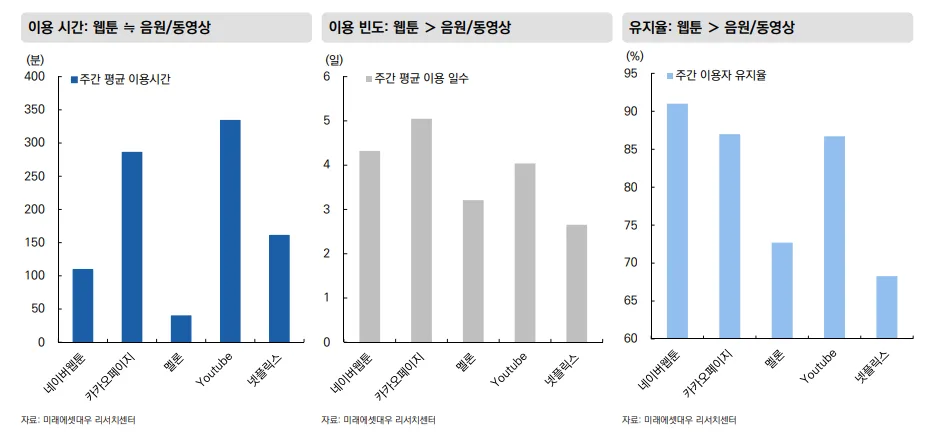
[차트 2]는 2021년 9월 13일 기준 국내 iOS App 매출 순위이다. 3위 네이버웹
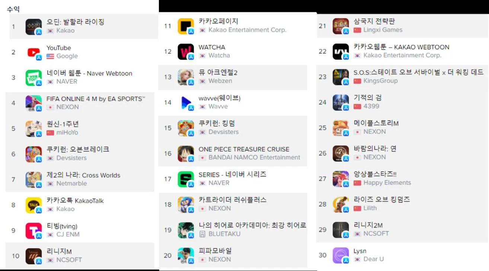
모바일에서 웹툰 콘텐츠 이용 행태는 이미 기존의 주류 콘텐츠 못지 않다. [차트 1]에서 볼 수 있듯 웹툰 이용 시간은 전문 제작 영상 콘텐츠를 제공하는 OTT 이용시간과 유사하며, 이용 빈도나 주간 이용자 유지율에서는 이미 OTT를 앞질렀다. (미래에셋대우, 2019) 유료 결제 측면에서 웹툰의 존재감은 더욱 도드라진다.
[차트 1] 웹툰과 기타 모바일 콘텐츠 이용 비교 [차트 2]는 2021년 9월 13일 기준 국내 iOS App 매출 순위이다. 3위 네이버웹툰을 필두로 네이버시리즈7 17위, 카카오페이지8 11위, 카카오웹툰 22위로 총 4개의 App이 진입해 있다. 유료 결제율이 독보적으로 높은 게임 장르를 제외한 App의 점유율을 보면 웹툰 관련이 40%로 가장 많으며, OTT가 20%로 두 번째를 차지하고 있다.
[차트 2] 국내 iOS 모바일 App 매출 순위 (2021.9.13)
(출처 : App Annie, ※ 그림의 회색 음영은 게임 App을 표시)
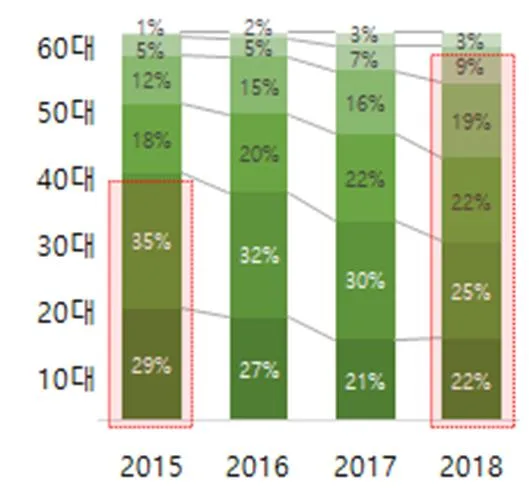
과거 웹툰은 일부 매니아들이 좋아하는 서브 컬처로 여겨졌다. 하지만 [차트 3]의 웹툰 소비자 연령 비율에서 보듯 현재는 전세대로부터 두루 사랑을 받고 있다. 본 연구는 2000년대 초반까지는 존재조차 하지 않았던 웹툰 비즈니스는 어떤 혁신을 통해 네이버와 카카오의 대표 수익 사업으로 성장할 수 있었는지를 살펴보고 우리나라 웹툰 비즈니스가 글로벌 시장에서도 성공할 수 있을지 가능성을 살펴보고자 한다. Q1. 2000년대 초까지 존재하지 않던 웹툰 비즈니스는 어떤 혁신을 통해 네이버/카카오의 대표 수익 사업으로 성장할 수 있었는가? Q2. 우리나라 웹툰 비즈니스는 글로벌 시장에서도 성공할 수 있을까?
제 2장 이론적 배경
1. 플랫폼 비즈니스
플랫폼 비즈니스는 서로 거래하기 힘들었던 다른 유형의 참가자(생산자, 소비자 등)를 연결시키고 상호작용을 촉진시킴으로써 가치를 창출하는 비즈니스로 참가자들이 적절한 상대를 만나 상품이나 서비스 또는 사회적 통화를 서로 교환할 수 있도록 해 모든 참가자가 가치를 얻도록 하는데 목적이 있다. 플랫폼 비즈니스의 여러가지 특징 중 이번 논의는 다면 시장(Multi-side Market), 교차면 네트워크 효과(Cross-side Network Effect), 닭과 달걀 문제(Chicken-Egg Problem)와 관련성이 크다.
첫째, 다면 시장(Multi-side Market)은 2개 이상의 참가자 집단 혹은 고객 집단(생산자, 소비자, 광고주 등) 간의 상호작용을 장려해 가치를 창출하도록 만드는 시장을 말한다. 다면 시장이 성공적으로 작동할 경우 참가자 집단은 검색비용이나 거래비용(혹은 둘 다)을 줄일 수 있다. 플랫폼은 참가자 집단의 핵심상호작용(거래 등)을 극대화해서 모든 참여자들이 상당한 편익을 가질 수 있도록 3가지 기능인 끌어오기(Pull), 촉진하기(Facilitate), 매칭하기(Match)를 잘 수행해야 한다. 끌어오기는 2개 이상의 참가자 집단을 플랫폼(시장)에 참가하도록 만드는 것으로 이들이 모두 플랫폼 상에 존재해야 핵심상호작용이 발생할 수 있다. 촉진하기는 플랫폼 상에서 참가자 집단 간 상호작용을 촉진하기 위해 그들이 쉽게 만나서 가치를 교환할 수 있도록 도구와 규칙을 제시하는 것이다. 매칭하기는 서로에 대한 정보를 이용해 각자가 원하는 것을 얻을 수 있도록 생산자와 소비자를 짝지어주는 것을 의미한다.(Alstyne et al., 2017)
둘째, 교차면 네트워크 효과(Cross-side Network Effect)는 다면 시장에서 최소 하나의 참가자 집단의 편익이 다른 참가자 집단의 사용자 수에 의존하는 것을 말한다.(Hagiu and Wright, 2011) 따라서 플랫폼 및 플랫폼 참가자 집단이 얻을 수 있는 가치는 참여자 집단의 사용자 수가 늘어남에 따라 증가한다. 앞서 살펴본 플랫폼의 핵심 기능 중 끌어오기는 양면 시장에서 교차면 네트워크 효과를 만들기 위한 기본이 된다. 이러한 상호 의존성에 의해 각 참가자 집단은 서로 영향력을 주고 받으며 다시 자신의 편익이 증가하는 강화 피드백 루프(Self-reinforcing Mechanism)가 촉진된다.(Gawer, 2014)
셋째, 닭과 달걀 문제(Chicken-Egg Problem)는 교차면 네트워크 효과에 의존하는 플랫폼이 초기에 맞닥뜨리는 도전으로 상호 의존성이 있는 참가자 집단 중 어느 쪽을 먼저 플랫폼에 끌어들일지를 결정하는 문제이다. T. R. Eisenmann et al.(2006)은 닭과 달걀 문제를 다음과 같이 분석했다. 플랫폼 참가자는 지불자(Money Side User)와 보조자(Subsidy Side User)로 나눌 수 있는데 지불자는 상대적으로 수요의 가격 탄력성이 작은 편으로 플랫폼에 많은 비용을 지불하며, 보조자는 지불자와 반대로 수요의 가격 탄력성이 상대적으로 큰 측이다. 보조자는 가격 및 플랫폼의 서비스 품질에 매우 민감해 충분한 편익이 제공되지 않으면 비용과 노력을 들여 플랫폼을 사용하지 않기 때문에 플랫폼은 이들에게 플랫폼 참여를 위한 보조금을 지원하게 되며, 이들을 참여시키기 이전에 플랫폼에 보다 호의적인 지불자를 먼저 끌어들여야 한다.
2. Flywheel Effect
Flywheel Effect은 동력 없이 관성만으로 회전운동을 하는 자동차 부품을 뜻한다. 최초 운동을 만들어 내기 위해서는 큰 추진력이 필요하지만 한번 가속도가 붙으면 추가적인 추진력 없이 저절로 돌아간다는 특성이 있다. Jim Collins는 2001년 저서 ‘Good to Great’에서 Flywheel의 원리를 경영학에 도입했다. 그는 최종 결과가 아무리 극적이더라도 혁신은 한 번에 일어나지 않으며, 훌륭한 기업을 구축하는 과정은 거대하고 무거운 Flywheel을 끊임없이 밀고, 회전하며, 돌파구가 될 때까지 모멘텀을 구축하는 것과 비슷하다고 말했다. (Collins, 2001)
아마존의 창립자 Jeff Bezos는 Jim Collins의 말에서 영감을 얻어 아마존 비즈니스 모델의 기본 전략이 되는 Virtuous Cycle을 개발했다. Virtuous Cycle은 처음에는 의도적으로 저렴한 가격이라는 추진력(Driving Force)을 가해 만족스러운 고객 경험(저렴한 소비)을 제공함으로써 아마존 플랫폼으로 고객(Traffic)을 끌어오는 것에서 시작한다. 아마존 플랫폼이 확보한 고객은 판매자들을 아마존 플랫폼에 입점하도록 유도하며 이를 통해 다양해진 판매자들은 고객의 선택지를 넓혀 또 다른 긍정적 고객 경험을 제공한다. 또한 플랫폼에 일정 수준(Critical Mass) 이상의 고객이 모이면 배송 등의 편리한 서비스를 낮은 비용으로 제공 가능해지고, 이러한 고객 경험의 향상은 플랫폼에 더 많은 고객들을 끌어들이게 된다. 이를 통해 규모의 경제를 달성한 아마존은 비용 구조 개선과 많은 판매자들 간의 치열한 경쟁을 통해 더 이상 인위적인 노력을 하지 않더라도 상품 가격을 계속 저렴하게 유지할 수 있으며, 이는 계속적으로 고객들이 아마존을 찾도록 만든다. 고객 경험 향상을 위한 끊임 없는 혁신이 축적되어 아마존은 전세계에서 가장 강력한 플랫폼 중 하나로 성장했다. 이후 플랫폼 비즈니스를 수행하는 여러 기업들이 아마존의 Virtuous Cycle과 같은 자사만의 Flywheel을 찾고자 노력하고 있다.
[그림 1] 아마존의 Virtuous Cycle
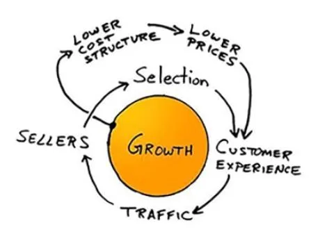
제 3장 웹툰과 웹툰 산업의 이해
1. 웹툰의 이해 웹툰은 우리나라에서 탄생해 전세계로 퍼져 나가고 있는 우리나라 고유의 디지털 코믹스 장르이다. 웹툰은 다른 디지털 코믹스와 형식과 창작방법, 향유방식에서 차이를 보인다. 기존의 디지털 코믹스가 출판만화의 형식과 틀(문고판 규격, 페이지 분절 등)을 그대로 따르면서 단순히 디지털로 만화를 제공한 것에 반해, 웹툰은 스마트폰에 최적화된 규격(가로폭은 스마트폰 화면 해상도에 맞는 크기, 세로폭은 자유), 세로 스크롤 및 이에 맞는 컷 분할(스마트폰 디스플레이에 맞춰 세로 방향으로 한 컷씩 배치해 스크롤로 감상, 연속적인 컷 사용으로 페이지 분절 없음) 등 스마트폰에 최적화된 웹툰만의 독특한 형식과 창작법을 만들어냈다.
[그림 2] 기존 디지털 코믹스(웹 코믹스, 左)와 웹툰(右) 비교
(출처: 13 Great Webcomics For kids and Teens, 그림 꿀팁사전)
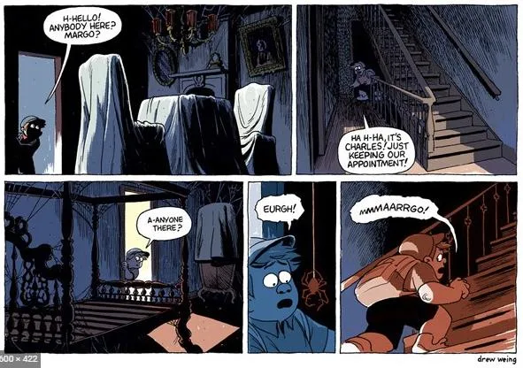
웹툰의 제작과 향유방식은 기존 출판만화와 많은 차이가 있다. 기존의 만화는 채널(주간지, 단행본 등)을 독점하고 있는 출판사에 의해 선택 받은 작가가 작품을 그리기 때문에 기획 및 제작/편집/발행 과정에서 출판사와 출판사에 소속된 편집자의 영향력이 크다. 이에 반해 온라인에서 자유롭게 작품을 게재하던 아마추어 작가들의 작품에서 유래한 웹툰은 편집자의 개입이 최소화된 상태에서 작가가 독자와 댓글 등으로 상호작용을 하며 작품을 만든다. 아마추어 작가의 참여는 기존의 정형화된 장르와 소재(순정, 무협 등)를 뛰어넘어 일상과 현재를 만화로 끌어내는 등 만화의 소재 다양화(일상툰, 전문직 등) 및 트랜드를 빠르게 반영해 보다 넓은 독자층 확보에도 기여했다.
2. 웹툰 비즈니스의 특징과 혁신
웹툰 비즈니스의 탄생과 발전은 국내 포털사(네이버, 카카오9)의 웹툰 사업 추진 과정과 많은 부분에서 궤를 함께 하고 있다. 포털사가 웹툰 서비스를 사업화 하는 과정에서 웹툰은 전반적인 질과 양이 향상되었다. 또한 포털사의 웹툰 서비스 구조는 웹툰의 장르적 특성을 형성(스마트폰 최적화 규격, 70컷 내외로 이뤄지는 편당 길이 등)하는 데도 영향을 미쳤다. 이 과정에서 우리나라 1위, 2위 포털이자 1위, 2위 웹툰 플랫폼을 운영하는 네이버와 카카오는 서로의 장점을 벤치마킹하며 웹툰 고유의 비즈니스 모델을 정립했으며, 시장의 파이를 함께 키워 왔다.
포털사가 중심이 되어 정립된 웹툰 비즈니스 모델은 기존의 출판만화와 공통점도 있지만 차이점도 크다. 가장 큰 차이는 웹툰 사업이 플랫폼을 기반으로 하고 있다는 점이다. 웹툰 플랫폼은 웹툰 작가와 독자라는 두 참가자 집단이 웹툰 플랫폼(웹사이트, App)을 통해 웹툰 콘텐츠를 거래하도록 돕는다. 2000년대 초반까지 웹툰은 개별 작가가 자신의 블로그나 홈페이지에 작품을 게재하고, 독자는 작가의 개별 사이트를 찾아가서 감상하는 방식으로 소비되었다. 즉, 웹툰을 보기 위해 독자는 여러 사이트를 찾아 헤매야 했다. 하지만 포털에 웹툰 코너가 생기면서 독자는 포털의 웹툰 코너만 방문하면 여러 작품을 손쉽게 감상할 수 있게 되었다. 웹툰 작가 역시 웹툰을 보고 싶어하는 독자들이 모여 있는 적확한 공간인 포털의 웹툰 코너에 작품을 게재하는 것을 선호한다. 포털 웹툰 코너를 통해 웹툰 독자와 작가 간 검색비용과 거래비용을 감소되며, 이를 매개하는 포털 웹툰 코너는 플랫폼이라 불리기에 충분하다. 이제는 웹툰 독자를 대상으로 하는 광고주 및 웹툰 IP(Intellectual Property) 활용을 원하는 2차 저작자(영화사, 드라마 제작 스튜디오 등)도 플랫폼에 참여하면서 웹툰 플랫폼은 양면 시장에서 다면 시장으로 확장되었다.
[그림 3] 웹툰 플랫폼의 다면 시장 구조
(출처 : 유안타증권, 2021)
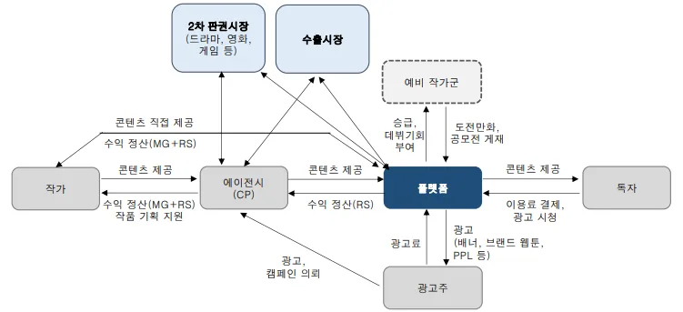
[표 1]의 보도 당시(2019.12월)에는 네이버웹툰 프랑스어, 스페인어 플랫폼에 현지 작품이 거의
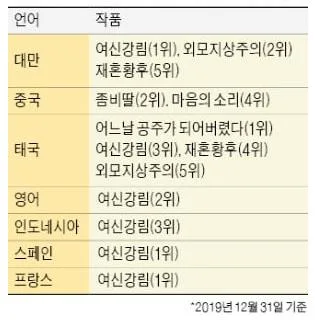
[차트 4] 해외 만화산업 규모 및 전망 (2014~2023년)
(출처 : 한국저작권보호원, 2020)
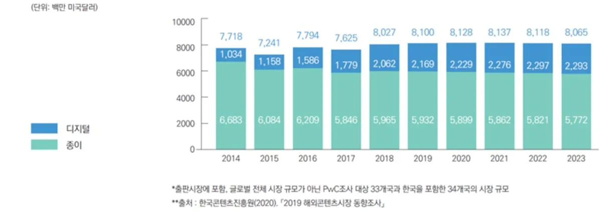
[표 5]는 일본 만화 시장의 추이를 나타내고 있다. 일본은 세계 최고의 만화 강
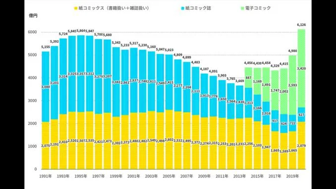
[차트 5] 일본 만화 시장 장기 추이 (1991~2020년)20
(출처 : HON.jp, 원출처 : 出版科学研究所20)
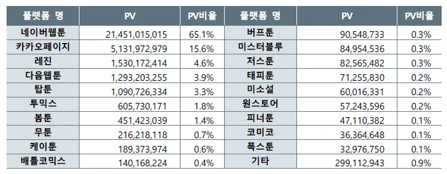
둘째, 웹툰 플랫폼은 고유의 유료 수익 모델을 보유하고 있다. 초기 웹툰은 포털의 트래픽을 높이기 위해 제공되는 무료 콘텐츠에 불과했다. 하지만 2013년 웹툰 전문 플랫폼 레진은 웹툰의 일부를 무료로 공개하고 이어서 보기 위해서는 유료로 결제를 요구하는 부분 유료화 모델을 내세우며 시장에 안착했다. 이 시기 네이버와 카카오에서도 미리보기, 완결보기, 베스트 콜렉션, 외전, 미공개 에피소드10 등 다양한 형태의 부분 유료화 모델을 도입하면서 웹툰은 본격적인 수익 사업화가 시작되었다.
가장 널리 알려진 부분 유료화 모델은 카카오의 ‘기다리면 무료’로 애니팡11의 하트 시스템12에서 착안한 수익 모델이다. 웹툰을 일정 시간(12시간, 1일, 1주일 등)마다 한편씩 무료로 제공하되, 기다리지 않고 바로 다음 편을 보기 위해서는 유료 결제를 하는 방식이다. 오랜 시간 동안 무료로 봐왔던 웹툰이 유료화 된다는 점에서 독자들의 반발도 있었지만 무료로 볼 수 있는 방안을 남겨둠으로써 큰 거부감 없이 성공적으로 시장에 자리 잡았다. 부분 유료화 모델은 웹툰의 장르적 특성에도 영향을 미쳤다. 현재 일반적인 웹툰의 한 편 분량은 70컷 정도로 기존 출판만화의 1권에 해당하는 분량이 10여편 이상으로 쪼개서 연재되고 있다. 편당 분량을 줄이는 대신 편당 가격도 200~300원으로 낮게 책정해 독자의 부담 없는 결제를 이끌어 내고 있다.
셋째, One Source Multi Use와 IP 비즈니스이다. 전통적으로 만화는 원천 콘텐츠로서의 성격이 강하며 성공한 만화는 검증된 흥행성을 바탕으로 다른 언어로 번역되어 해외 시장에 진출하거나, 다양한 형태의 다른 콘텐츠(영화, 게임 등), 상품(굿즈, 광고 등)으로 재생산되어 부가가치를 창출하는 IP 비즈니스로 발전했다. 잘 알려진 디즈니, DC 엔터테인먼트, 마블 엔터테인먼트 모두 미국의 출판만화로 시작했으며, 인기를 끈 캐릭터와 스토리를 영화, 게임 및 다양한 캐릭터 상품 제작 등 IP를 활용한 비즈니스로 확장하며 세계적 기업으로 성장했다. 웹툰 역시 만화의 일종으로 IP 비즈니스로서 성장할 수 있는 특성을 갖추고 있다. 특히 웹툰은 주간 연재를 통해 독자들의 반응을 살피고, 피드백을 작품에 반영하기 때문에 어떤 IP들 보다도 스토리의 시의성이 높다. 이러한 특성은 대중들의 반응에 민감한 2차 제작자들이 웹툰 IP을 선호하는 이유이기도 하다.1314 이미 웹툰과 웹툰을 원천으로 한 여러 드라마, 영화가 국내를 넘어 전세계적 성공을 얻었다.15네이버웹툰 화요 만화 1위 여신강림은 8개 언어로 번역되어 전세계에 서비스 되고 있는데 외모 콤플렉스에 대한 공감대를 형성하며 국적과 문화를 넘어서며 대만, 태국, 프랑스16 등 여러 나라에서 인기 순위 최상위권에 올라 있다. 웹툰 스위트홈과 승리호는 넷플릭스의 오리지널 작품으로 영상화 되어 전세계 각국 인기 순위 1위 및 세계 넷플릭스 영화 시청 1위에 오르며 전세계 시장에서 웹툰 IP의 가치를 보여주었다.
이러한 특징을 기반으로 웹툰은 만화 시장에서 기존 강자인 출판만화를 밀어내고 시장의 주도권을 확보했을 뿐만 아니라 사양길로 접어든 만화산업을 다시 성장시키고 있다.(만화 시장의 성장 추이는 이어지는 챕터에서 상세 분석) 따라서 웹툰의 특징을 혁신, 그리고 웹툰의 특징을 만들어낸 제도와 활동을 혁신 활동이라고 볼 수 있다. 웹툰의 비즈니스 혁신을 아래와 같이 정리한다.
대혁신 : 만화 시장에 플랫폼 비즈니스 도입 [세부 혁신 포인트] ⓛ 도전 만화 제도 도입으로 단시간에 다량/양질의 웹툰 작품 확보 ② 부분 유료화 과금 모델 개발로 유료 사업화에 성공 ③ 웹소설, 웹툰, 영화/드라마의 사업적 연계로 IP 비즈니스 적극 개발 ④ 국내 성공 비즈니스 모델을 글로벌에 빠르게 이식해 글로벌 시장 선점
3. 국내외 웹툰 시장 규모
글로벌 시장조사업체 QY Research가 2021년 8월 발표한 자료에 따르면 2020년 전세계 만화 시장 규모는 109억 달러(약 12조원)로 추정되며, 2027년까지 CAGR 10.95%로 성장해 2027년 228억 달러(약 25조원)에 이를 것으로 예측했다.17 또한 한국콘텐츠진흥원의 2020 해외 콘텐츠 시장 분석에 제시된 주요국(한국, 일본, 미국, 중국 등 5개국) 만화 시장 규모를 통해 직접 추정해 본 2019년 전세계 만화 시장 규모도 112억 달러(약 12조원)18로 도출되었다.
사실 위에서 제시한 시장 규모는 기존 자료들의 예측치와 비교하면 이례적으로크다. [차트 4]는 한국콘텐츠진흥원의 2019 해외콘텐츠시장 동향조사에 실린2014~2023년 해외 만화산업 규모와 전망으로 2019년과 2020년 전세계 만화 시장 규모는 각각 81억 달러이며, 향후 성장은 거의 없다. 다수의 기관들이 이와 유사한 예측을 하고 있는데 이는 디지털 만화의 확산 속도를 과소평가하고, 시장 창출력을 간과한 결과이다.
[차트 6] 국내 만화 시장 규모
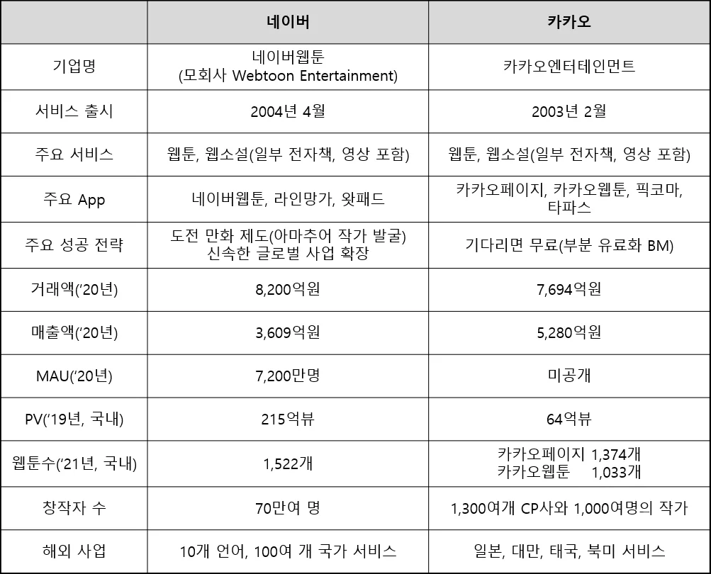
[표 2]는 국내 웹툰 시장의 연간 PV(Page View) 기준 순위를 보여준다. 1위는
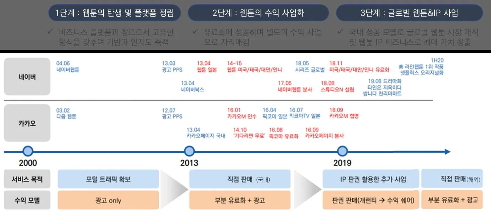
[표 2] 2019년 플랫폼별 PV 추정치22
(출처 : 2020 웹툰 사업체 실태조사 보고서, 원출처 : 웹툰가이드 WAS DB)
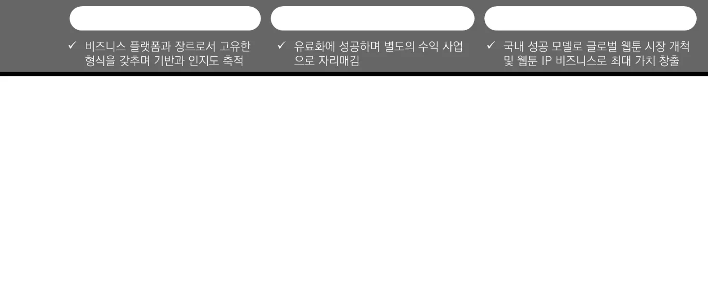
국이지만 1990년대 중반을 기점으로 만화 시장은 점점 쇠락의 길을 걷고 있었다. 하지만 2014년부터는 디지털 코믹스(電子コミック)가 CAGR 25.2%로 빠르게 성장하면서 만화 시장 규모가 빠르게 반등하고 있다. 디지털 코믹스는 2000년대에도 존재했으나 그 성과가 미미했다. 하지만 서비스가 플랫폼의 형태를 갖추고 만화와 독자 양측에서 일정 수준의 Critical Mass을 넘으면서 이용이 폭발적으로 증가하고 있다. 특히 디지털 코믹스는 인터넷, 스마트폰 등 현대인 맞춤형 매체를 통해 서비스 되면서 단순히 기존의 출판만화를 대체하는 수준을 넘어서 새로운 시장을 창출하며 전체 만화 시장의 파이를 키우고 있다.19 따라서 각국의 디지털 코믹스와 전체 만화 시장이 지금과 같은 추세로 성장할 것으로 예상하면 곤란하다. 2019년 미국, 중국, 러시아, 태국의 디지털 코믹스 비율은 각각 7.4%, 1.9% 1.0%, 9.3% 불과하지만, 반대로 생각하면 그 만큼 성장의 여지가 더 크다는 것을 의미한다. 디지털 코믹스의 혁신성을 이해하고 보다 공격적으로 시장을 예측함으로써 미래 시장에 사전적으로 대응해 나갈 필요가 있다.21 국내 만화 시장은 2019년 현재 9,540억원 규모로 2007년부터 CAGR 4.5%로 지속 성장하고 있다. 현재 디지털 코믹스의 비율은 42.2%로 출판만화 시장이 정체 상태이나 디지털 코믹스의 빠른 성장(CAGR 18.4%)이 전체 시장의 성장을 이끄는 현상이 일본과 동일하게 나타나고 있다.
4. 주요 기업
네이버웹툰으로 전체 PV의 65.1%를 차지하며 독보적인 점유율을 보이고 있다. 이어서 카카오가 운영하는 카카오페이지와 카카오웹툰(舊 다음웹툰)이 합계 19.5%로 뒤를 잇고 있다. 3위는 부분 유료화 BM을 내세운 웹툰 전문 플랫폼의 효시인 레진(4.6%)이다. 이렇게 포털사 출신의 네이버와 카카오 웹툰 플랫폼이 전체 PV의 84.6%를 차지한 가운데 나머지 시장을 중소 규모의 웹툰 전문 플랫폼들이 경쟁하고 있다. 네이버와 카카오가 전연령대를 아우르는 다양한 웹툰을 서비스하는 것에 반해 웹툰 전문 플랫폼은 포털이 다루기 어려운 니치 장르(성인, BL 등)를 공략하며 함께 성장 중이다.
네이버는 2004년 웹툰 서비스를 시작했다. 2017년에는 네이버웹툰이라는 별도 법인으로 분사했으며, 현재는 미국에 본사를 둔 Webtoon Entertainment를 세우고 글로벌 사업을 강화하고 있다. 사업 초기 아마추어들이 작품을 게재하고 독자의 반응에 따라 정식 연재 작품으로 채택하는 도전 만화 제도를 도입해 국내 웹툰 누적 조회수 1위(70억 뷰) ‘마음의 소리’ 조석, 누적 조회수 45억뷰 ‘신의 탑’ 이종휘(필명 SIU) 등 다수의 아마추어 작가 발굴에 성공23하며, 독자를 대거 확보했다. 네이버는 2014년부터 해외 서비스를 시작해 2021년 10월 현재 10개 언어로 100여개 국에서 1위 만화 App 자리에 올랐다. 특히 아마추어 발굴은 해외 사업에도 동일하게 적용돼 해외 현지 콘텐츠 발굴을 위한 캔버스(Canvas, 국내 도전 만화와 제도와 동일)를 운영하고 있으며, 2021년 1월 아마추어 기반의 북미 1위 웹소설 플랫폼 왓패드를 인수해 단숨에 MAU 1억 6,600만명(왓패드 이용자 9,400만명, 네이버웹툰 이용자 7,200만명)의 거대 플랫폼으로 뛰어올랐다. 2020년 기준 네이버웹툰의 전세계 거래액은 8,200억원이며, 매출액은 3,609억원이다.
[표 3] 네이버와 카카오 웹툰 사업 현황 비교24
(출처 : 본인 작성23)
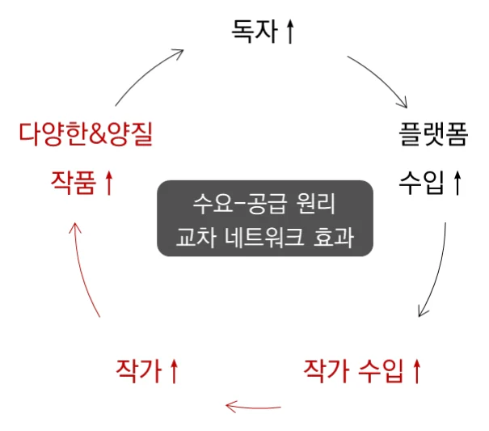
[그림 5] 웹툰 플랫폼 비즈니스 발전 단계 구분
(출처: 미래에셋대우, 2019를 기본으로 일부 내용 추가)

2003년 서비스를 시작한 카카오웹툰(舊 다음웹툰)은 현존하는 가장 오래된 웹툰 플랫폼이다. 네이버보다 빠른 시작으로 초기에는 앞섰으나, 네이버가 포털 1위에 오르면서 자연스럽게 1위 웹툰 플랫폼의 자리도 내어주게 되었다. 네이버가 도전 만화를 통해 작품을 확보한데 비해 카카오는 CP(Contents Provider)에 대한 투자 및 인수를 하면서 전문 작가와 인기 작품을 확보하는데 힘썼다. 카카오웹툰의 대표 성공 전략은 부분 유료화 모델인 ‘기다리면 무료’를 개발해 웹툰 플랫폼의 수익 모델을 정립한 것이다. 인기 작품과 수익 모델이 결합하면서 카카오웹툰은 수익성을 빠르게 키워갈 수 있었다. 또한 이러한 유료 수익 모델을 기반으로 2016년 세계 최대 만화 시장인 일본에 진출(픽코마)해 앞서 진출한 네이버(라인망가, 2014년)를 누르고 만화 App 1위 자리에 올랐다. 현재 카카오웹툰은 국내보다 일본에서 더 많은 수익을 내고 있다. 또한 대만, 태국 등에서 진출해 있으며, 2021년 5월 북미 2위 웹툰 플랫폼 타파스와 5위 웹소설 플랫폼 래디쉬를 인수하며 글로벌 사업 확장해 나가고 있다. 2020년 기준 카카오웹툰의 전세계 거래액은 7,694억원이며, 매출액은 5,280억원이다.
국내외 웹툰 플랫폼 1, 2위를 다투는 네이버와 카카오의 대표 성공 전략은 다르나 서로의 장점을 벤치마킹하며 웹툰 플랫폼 비즈니스 고유의 모델을 함께 정립했다. 카카오는 네이버가 웹툰 서비스를 하기 전인 2003년부터 ‘나도 만화가’ 코너를 운영하며 작가들을 발굴해왔는데, 후발사업자인 네이버는 이를 보다 적극적으로 활용했다. 네이버도 카카오의 기다리면 무료를 본 딴 ‘너에게만 무료’를 비롯한 부분 유료화 모델을 도입하며 도입하며 본격적인 매출 성장 가도에 올랐다.
한편 양사는 글로벌 사업과 함께 웹툰을 기반으로 하는 IP 사업을 본격화하고 있다. 웹소설-웹툰-영상화로 이어지는 밸류체인을 모두 확보함으로써 디즈니, 마블/DC 엔터테인먼트와 같은 전세계적인 IP 전문 기업으로 성장을 꿈꾸고 있다. 카카오는 2021년 3월 웹툰/웹소설 IP를 보유한 카카오페이지와 영상, 디지털 콘텐츠 사업을 하던 카카오M의 합병(합병법인 카카오엔터테인먼트)을 통해 보유한 IP가 유기적으로 다양한 분야의 콘텐츠로 개발될 수 있는 체계를 갖췄다. 한편 네이버는 CJ ENM, Vertigo Entertainment 등 국내외 유명 영상 제작사 지분 교환 및 파트너십을 맺고 협력 관계를 만들었다. 2021년 6월에는 왓패드 웹툰 스튜디오를 설립하고 네이버웹툰, 왓패드 보유 IP의 영상화에 1천억원을 투자할 계획을 밝혔다. 네이버에 따르면 현재 100개가 넘는 작품의 영상화 프로젝트가 진행중이다.25
5. 웹툰 비즈니스 발전 단계
지금까지 살펴본 내용을 정리해보면 웹툰 플랫폼 비즈니스의 발전 과정을 크게 3단계로 구분해 볼 수 있다. 1단계는 웹툰의 탄생 및 플랫폼 정립기이다. 웹툰이 단순히 포털의 트래픽을 확보하기 위한 수단으로 활용되던 시기이나, 이 시기를 거치며 웹툰 장르적 특성 및 고유의 플랫폼 형태를 갖추며 향후 비즈니스의 기반과 인지도를 쌓아 나갔다.
2단계는 웹툰의 수익 사업화 시기이다. 2013년 부문 유료화 모델의 성공적 도입 이후 웹툰은 더 이상 포털의 트래픽 확보의 수단이 아니라 그 자체가 수익성을 가진 하나의 비즈니스로서 확실히 자리 잡을 수 있게 되었다. 네이버와 카카오는 웹툰 사업을 별도 법인으로 분사하고 본격적으로 사업을 키웠다. 이 기간 다수의 웹툰 전문 플랫폼 및 CP, 웹툰 스튜디오, 에이전트 같은 다양한 사업자가 발생하며 하나의 생태계가 조성됐으며, 웹툰이 의미 있는 산업으로 자리잡았다.
3단계는 글로벌 웹툰&IP 비즈니스 시기이다. 현재 우리나라 웹툰 플랫폼 사업자들은 국내에서 성공한 웹툰 비즈니스 모델(플랫폼, 수익구조)과 양질의 작품을 앞세워 공격적인 해외사업을 진행중이다. 또한 확보한 웹툰 IP를 다양한 콘텐츠로 확장해 큰 부가가치를 창출하는 IP 비즈니스 사업자로 거듭나기 위해 노력중이다.
제 4장 웹툰 플랫폼의 성장 전략 : Flywheel Effect
1. 포털사 웹툰 플랫폼의 고민
플랫폼 비즈니스는 초기에 닭과 달걀 문제에 맞닥뜨리게 된다. 웹툰 플랫폼에서 닭과 달걀은 양질의 웹툰을 공급할 수 있는 웹툰과 이를 소비할 많은 독자이다. 웹툰 플랫폼에서의 닭과 달걀 문제를 앞서 살펴본 T. R. Eisenmann et al.(2006)의 보조자, 지불자 관점에서 살펴보면 독자를 보조자, 웹툰 작가는 지불자로 정의할 수 있다. 이는 웹툰 플랫폼에서 독자와 작가의 행태를 생각해보면 쉽게 이해된다. 다수의 독자는 웹툰에 돈을 쉽게 쓰려고 하지 않으며, 이들을 유인하기 위해 플랫폼은 무료만화, 이벤트 캐시 등 보조금을 독자에게 지급하고 있다. 이 과정에서 웹툰 작가는 자신의 작품이 소비됨에도 대가를 지급받지 못하는 형태로 비용을 지불하게 된다.26 웹툰 서비스를 시작하던 당시 네이버와 카카오(舊 다음)는 이미 포털 사업에서 강력한 지위를 확보하고 있었기 때문에 포털 첫 페이지에 웹툰 코너를 배치하는 것만으로도 독자를 웹툰 플랫폼으로 비교적 쉽게 끌어올 수 있다. 하지만 보조자인 독자는 한번 들린 웹툰 코너에서 재미를 느끼지 못하면 쉽게 떠나고 쉽게 돌아오지 않는다. 독자를 웹툰 플랫폼에 계속 잡아 두기 위해서는 다양한 독자들이 원하는 양질의 새로운 웹툰이 지속적으로 공급되어야 한다. 따라서 웹툰 플랫폼이 풀어야 할 가장 중요한 문제는 ‘어떻게 다양하고 좋은 웹툰을 지속적으로 확보할 것인가’이다.
이는 웹툰 플랫폼 사업 초기 뿐만 아니라 지속적으로 중요한 문제이다. 포털의 웹툰 플랫폼은 독자, 웹툰 작가, 그리고 광고주가 참여하는 다면 시장으로 양질의 웹툰이 많아지면 독자가 늘어나고, 이는 다시 또 다른 작가를 플랫폼으로 끌어들여 작품을 공급하도록 해 교차 네트워크 효과를 일으킨다. 한편 독자가 증가함에 따라 광고주와 광고 단가도 늘어난다. 교차 네트워크 효과가 커질수록 참여자 간 거래는 활성화되며, 플랫폼은 거래 수수료 뿐만 아니라 참여자들을 타겟으로 하는 제 3의 비즈니스를 플랫폼에 추가하면서 수익을 키울 수 있다. 따라서 이 연쇄작용의 첫걸음인 ‘다양하고 좋은 웹툰을 지속적으로 확보하는 방안’은 또 한번 웹툰 플랫폼의 핵심 문제가 된다.
웹툰은 스토리를 구상하는 창의력과 이를 그림으로 구현하는 노동력을 함께 요구하는 노동집약적인 상품이다. 콘텐트진흥원에서 실시한 2020년 웹툰 작가 실태조사 보고서에 따르면 웹툰 작가들은 일 평균 10.5시간 창작활동을 하며, 주중 평균 창작활동 일수는 5.8일로 노동 시간이 길고 강도가 높은 편에 속한다. 이러한 노동환경에서 작가가 웹툰을 지속 연재하기 위해서는 작품활동만으로도 생계를 꾸릴 수 있어야 한다. 따라서 ‘다양하고 좋은 웹툰을 지속적으로 확보’하기 위해 가장 기본적으로 ‘작가 수입’ 문제를 해결해야 한다. 나아가 웹툰을 통해 높은 수입을 얻을 수 있다면 수요-공급의 시장 경제의 원리에 의해 자연스럽게 웹툰 작가는 늘어난다. 예를 들어 웹툰 작가의 수입이 좋다면 순수 미술, 산업 디자인 등 미술 관련 다른 업계에 종사하고 있거나 취미로 그림을 잘 그리는 사람들이 웹툰 작가를 희망할 가능성이 커진다. 이렇게 작가가 늘어나면 다양한 스토리를 가진 양질의 작품이 탄생할 가능성도 높아진다.
정리하면 포털 웹툰 사업자들의 고민이었던 ‘어떻게 다양하고 좋은 작품들을 지속적으로 확보할 것인가’의 문제는 자본주의 시장의 기본이 되는 수요-공급의 원리와 웹툰 플랫폼이 가지고 있는 교차 네트워크 효과에 기반해서 풀어볼 수 있다. 우선 다양하고 좋은 작품을 늘리기 위해서는 작품을 그릴 작가가 많이 있어야 한다. 작가의 수는 수요-공급의 원리에 의해 작가의 수입을 높임으로써 공급을 늘릴 수 있다. 이렇게 해서 양질의 작품이 늘어나면 자연스럽게 플랫폼을 이용하는 독자들이 늘어나게 되며 독자 트래픽의 증가는 광고 등에 의해서 플랫폼의 수입을 증가시킨다. 그리고 플랫폼의 수입이 늘어나면 플랫폼은 작가들에게 더 높은 수입을 제공할 수 있다. 이렇게 만들어진 하나의 사이클을 웹툰 플랫폼비즈니스의 기본 원리, Flywheel이라고 볼 수 있다.
[그림 6] 웹툰 플랫폼 비즈니스 기본 원리, Flywheel
(출처 : 본인 작성)
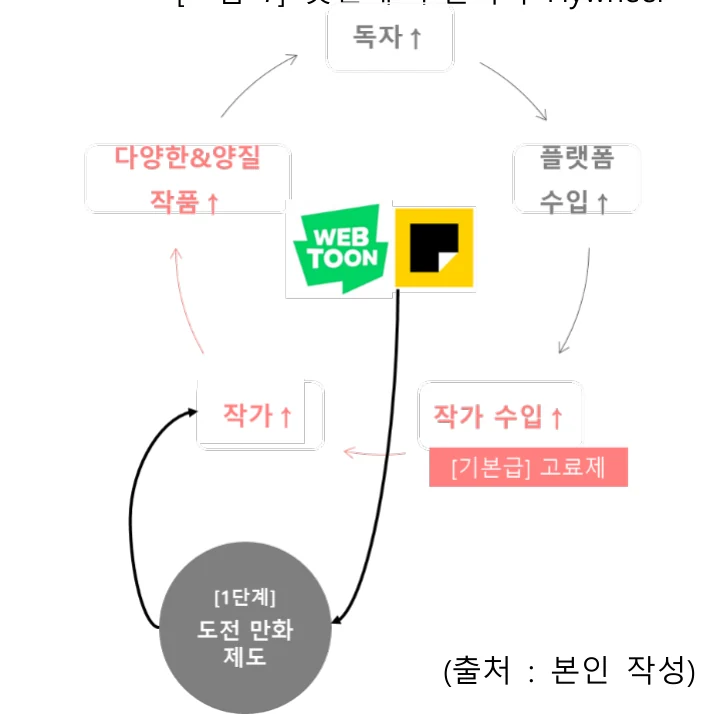
2. 웹툰 플랫폼 비즈니스의 내부 Flywheel
플랫폼 비즈니스에서의 Flywheel은 초기에는 자원을 투입하거나 새로운 제도를 도입하는 등 외부에서 의도적으로 가한 추진력(Driving Force)을 바탕으로 가치를 제공하지만 이후에는 선순환을 통해 비즈니스가 스스로 가치를 창출하는 것을 뜻한다. 네이버와 카카오의 웹툰 비즈니스 혁신은 웹툰 플랫폼 비즈니스의 Flywheel이 움직일 수 있는 추진력으로 역할을 했다. 특히 최초의 추진력(도전 만화 제도) 뿐만 아니라 비즈니스의 성장에 따라 단계별로 새로운 추진력(부분 유료화 수익 모델, IP 비즈니스)을 추가해 Flywheel이 더욱 빠르게 돌아가도록 만들었다. Flywheel에서 핵심은 앞서 살펴보았듯 작가 수입 향상이다. 네이버와 카카오가 가
한 각각의 추진력은 직접 혹은 간접적인 방식으로 작가의 수입을 향상시켰으며, 이는 최종적으로 ‘다양하고 좋은 웹툰을 지속적으로 확보’하는데 기여했다.
(1) 도전만화 제도와 고료제(기본급)
[그림 7] 첫번째 추진력과 Flywheel
(출처 : 본인 작성)
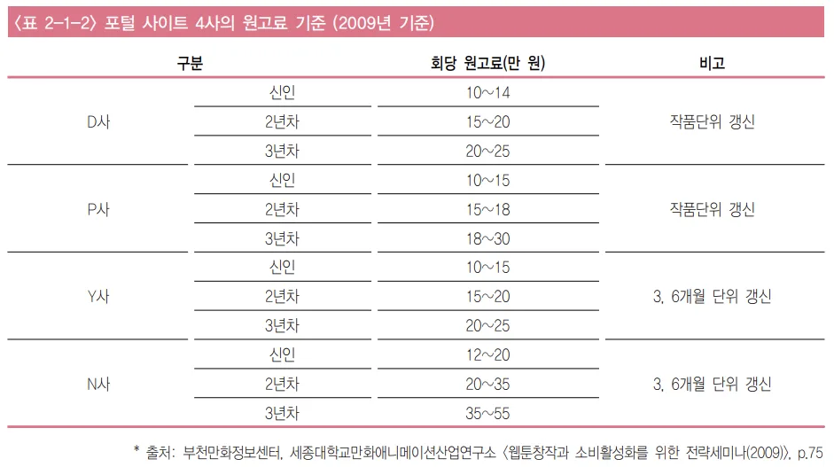
Flywheel을 작동시키 위해서 최초로 사용한 추진력은 도전만화 제도 도입이다. 네이버는 2006년 아마추어 작가들이 자유롭게 작품을 올릴 수 있는 ‘도전 만화가’ 코너를 만들고 실력이 검증된 아마추어를 프로 작가로 발굴/데뷔시키면서 단기간에 양질의 작품을 다수 확보할 수 있었다.27 2000년대 초반 기존의 출판 만화시장은 새로운 작가와 작품을 단기간에 발굴하기 어려운 구조였다. 당시 만화가가 되기 위해서는 유명 작가의 문하생으로 들어가서 수년간 수련하는 도제 방식이 주류였다. 또한 출판만화 외 독자와 만날 수 있는 다른 길이 거의 없었기 때문에 채널을 독점하고 있는 출판사와 출판사 소속 편집자의 눈에 띄지 못하는 작가와 작품은 최종 소비자인 독자에게 작품을 선보일 기회조차 없었다. 또한 편집자가 만화 제작에 고관여하는 구조상 한번에 소수의 작품만 담당하기 때문에 출판되는 만화수도 제한될 수밖에 없다.
도전 만화 제도는 작품 게재를 원하는 모든 아마추어의 작품을 최종 소비자인 독자가 바로 평가할 수 있도록 공개하고 여기서 독자들에게 좋은 반응을 얻은 작품을 정식 연재 작품으로 발탁했다. 출판사와 편집자의 역할, 도제 제도가 사라지
고 많은 작가와 작품이 바로 독자를 만날 수 있게 되었다. 이러자 지금까지 독자와 만날 기회가 차단되어 있던 많은 지원자와 아마추어들이 도전 만화에 자신의 작품을 올렸다. 2014년 6월 1일 기준 네이버 도전만화에는 총 139,789명이 작품을 올렸으며, 그 중 175명이 정식 웹툰 작가로 등단했다. 이들의 비중은 당시 네이버 정식 연재 작가 365명의 약 절반인 47.9%이다.28 도전 만화 제도를 통해 네이버는 ‘마음의 소리’ 조석, ‘노블레스’ 손제호, 이광수, ‘신의 탑’ 이종휘(필명 SIU) 등 걸출한 작가들을 발굴해냈다.
초기에 포털사가 웹툰 서비스를 시작한 목적은 웹툰을 통해 포털의 이용 트래픽 증가시켜 그들의 본원적 수익인 광고 수입을 늘리는데 있었다. 2013년 당시 네이버 웹툰 서비스 총괄 김준구 부장(現 네이버웹툰 대표이사)의 말에 따르면 ‘네이버 웹툰의 경우 초창기에는 하루 이용자 수가 8,000명, 연재물이 5개에 불과했는데 10년 만에 하루 이용자 수 700만명에 ‘도전 작품’을 뺀 고정 연재물만 150개 작품으로 늘어났다’고 한다.29 이를 통해 10년 간 작가와 작품수 뿐만 아니라 독자 트래픽도 크게 늘리는데 성공했음을 확인할 수 있다.
도전 만화 제도는 그 동안 등단을 하지 못하던 작가 지망생들과 아마추어들에게 데뷔 기회를 제공하며 성공적으로 자리잡았다. 하지만 앞서 살펴보았듯 노동집약적인 웹툰 상품의 특성상 작가가 지속적으로 웹툰을 연재하기 위해서는 기본적인 수입이 뒷받침되어야 한다. 이를 위해 포털은 정식 연재를 하는 작가와 고료 계약을 맺었다. 고료제는 편당 고료 및 월간 연재 횟수를 정하고 이를 월 단위로 지급하는 방식이다. 작가 입장에서는 작품의 인기 유무에 관계없이 작품만 잘 납품하면 계약 기간 동안 매월 고정된 수입을 받을 수 있기 때문에 안정적인 생활을 할 수 있다는 장점이 있다.
[표 10]는 2009년 기준 웹툰 작가의 고료 수준을 보여주는 자료이다. 주 1회
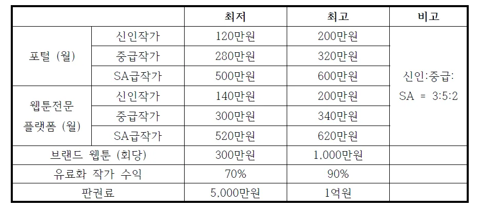
[표 4] 2009년 웹툰 원고료 기준
(출처 : 2011 만화 산업 백서)
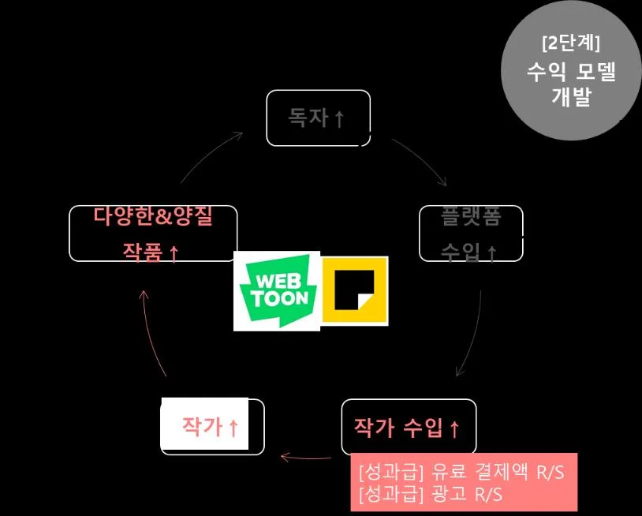
[표 5] 2014년 웹툰 원고료(포털) 및 Minimum Guarantee(웹툰 전문 플랫폼) 기준
(출처 : 2015 웹툰 산업 현황 및 실태조사)
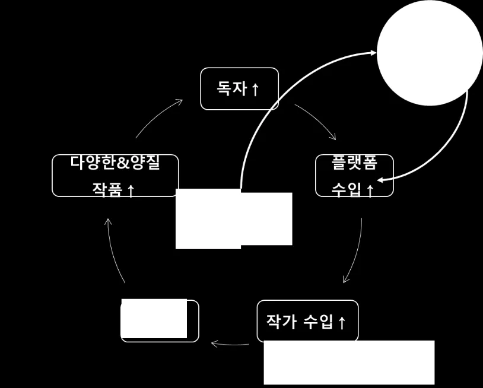
연재를 고려시 2009년 신인 작가의 월 고료는 최저 40만원에서 최대 80만원 선이다. 당시 1인 가구 기준 최저생계비는 49만원, 2인 가구 기준으로는 83.5만원이었다.30 따라서 신인 작가 고료로는 생계를 겨우 유지하거나 그것조차 어려웠다.31
고료 기준은 포털 웹툰 서비스 트래픽이 증가하면서 함께 상승했다. [표 5]는 2014년 웹툰 작가 고료 기준이다. 신인 작가 월 고료는 120만원~200만원 수준으로 2009년 대비 2.5배~3배 가량 높아졌다. 2014년 최저생계비는 1인가구 기준 60.3만원, 2인 가구 기준 102.7만원32으로 웹툰 고료만으로는 가까스로 최저 생계를 유지하거나, 생계 유지를 위해 과중한 노동(주 2회 연재)을 해야 했던 2009년에 비해 2014년에는 주 1회 웹툰 연재로도 보다 안정된 생활을 누리게 되었다.
최근에는 정식 연재 작가 뿐만 아니라 도전 만화에 연재 중인 아마추어 작가를 대상으로도 원고료나 지원금을 제공해 안정적인 작품 활동을 돕는 제도(카카오 스테이지ON, 네이버 포텐업 등)도 시행되고 있다. 이런 제도는 재능 있는 아마추어가 정식 등단 전까지 경제적 부담을 줄이고 작품활동에 집중하도록 돕는다.
정리하면 초기 웹툰 시장을 선도하던 포털사(특히 네이버)는 도전 만화 제도를 통해 실력 있는 아마추어들을 등단시키며 단시간에 ‘좋은 작가와 양질의 다양한 작품’을 발굴할 수 있었다. 이 과정에서 포털은 작가들이 생계 걱정 없이 창작 활동을 이어갈 수 있도록 월정액 고료를 지급했다. 초기 고료는 최저 생계비 수준에 불과했으나, 웹툰을 찾는 독자가 늘어나고 이를 통해 포털의 광고 수익이 증가하면서 이후에는 작가의 고료도 최저 생계비의 2배를 웃돌 정도로 향상되었다. 안정된 수입 구조가 정립되면서 생업으로 웹툰 작가를 택하는 사람들이 지속적 생겨났고, 이는 더 많은 양질의 작품을 탄생시켰다.
(2) 수익 모델 개발과 Revenue Sharing(성과급)
[그림 8] 두번째 추진력과 Flywheel 두번째 추진력은 플랫폼의 적극적
(출처 : 본인 작성)
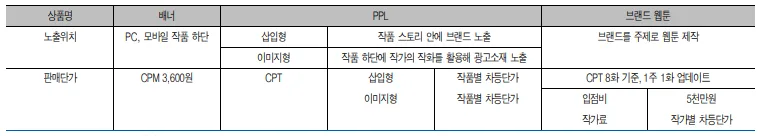
두번째 추진력은 플랫폼의 적극적인 수익 모델 개발이다. 앞서 살펴본 고료제가 작가들이 작품 활동에만 전념하더라도 생활이 가능한 기본적인 수입을 보장해준 것이라면, 2013년부터 본격적으로 도입된 부분 유료화 수익 모델과 다양한 웹툰 광고 개발은 작가가 성과에 따른 고수입을 얻을 수 있는 기회를 열어주었다.
웹툰 작가가 받는 고료는 사전 계약에 따라 정액으로 지급된다. 작품 인기에 따라 계약 갱신을 통해 고료를 인상하는 경우도 있지만, 기본적으로는 작품의 인기(조회수)가 높아도 고료 외 추가적인 보상이 주어지지 않는다. 하지만 유료화 모델이 도입되면서 작가들은 정액 고료 뿐만 아니라 자신의 웹툰에 대한 유료 결제액의 일부를 배분 받을 수 있게 되었다. 즉, 작품이 인기를 얻고 유료 결제가 늘어날수록 작가 수익도 비례해 증가한다. 네이버와 카카오의 경우 작가와 플랫폼이 유료 결재액을 5.5:4.5~9:1의 비율로 나눈다고 알려져 있다.
부분 유료화 모델 도입을 통해 작가의 수입이 얼마나 증가했는지는 부분 유료액 Revenue Sharing(R/S)가 수익의 대부분을 차지하는 웹툰 전문 플랫폼에 연재 중인 작가의 수입을 통해 이를 짐작해볼 수 있다.33 대표적인 웹툰 전문 플랫폼 레진은 2014년 자사의 플랫폼에서 1년간 가장 많은 매출을 얻은 작가의 연수입이 2억 8천만원이며, 2017년 기준으로는 37명의 작가가 연 1억원 이상 수익을 거
뒀다고 밝혔다.34 한편 부문 유료화 모델 도입 직전 네이버에서는 PPS(Page Profit Sharing) 제도를 공개했다.35 이는 웹툰 페이지 내에 다양한 광고를 싣고 여기서 나오는 수익을 작가와 플랫폼이 나눠 갖는 광고 R/S이다.36 카카오가 선제적으로 웹툰 부분 유료화를 도입한 것에 비해 트래픽을 중시하는 네이버는 웹툰의 유료화에 대한 독자들의 반발을 우려해 광고를 보다 적극적으로 활용해 수익화하는 방안을 모색했다.
[표 6]는 다양한 웹툰 광고의 종류와 단가 산정 방식을 보여준다. 가장 대표적
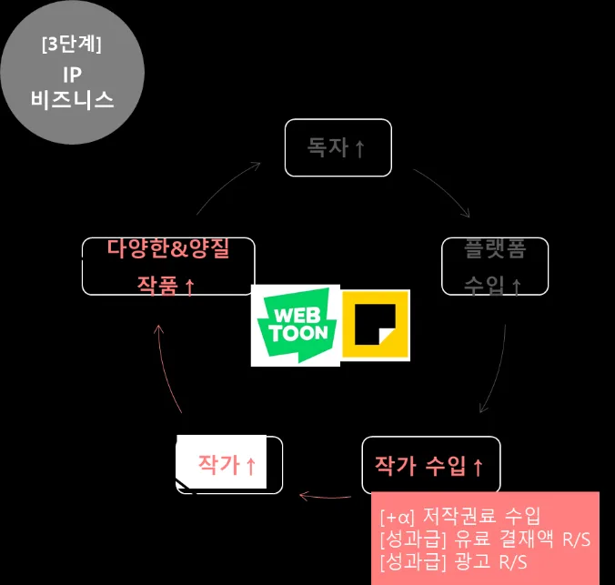
[표 6] 네이버 웹툰 광고 단가
(출처 : 유안타증권, 2021, 원출처 : 네이버웹툰 매체소개서)
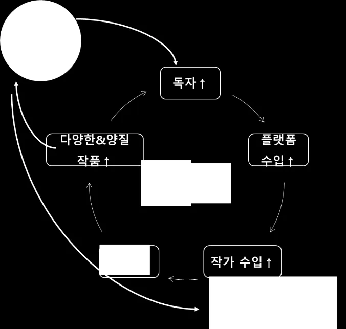
인 배너 광고는 작품 말미에 광고를 게재하고 CPM(Cost Per Mille) 방식으로 광고주에게 비용을 부과하는 형태이다. 여기서 발생하는 수익은 플랫폼과 작가가 5:5로 나눈다. 따라서 광고가 게재된 작품의 조회수가 높아질 수록 작가의 수입도 비례해서 늘어나게 된다. 2013년 6월 네이버는 작가들의 월 평균 PPS 수입이 255만원이라고 밝혔다.37 또한 인기 웹툰 외모지상주의의 작가 박태준은 2015년 한 TV 프로그램에 나와 ‘웹툰 광고 수익만으로 월 1,000만원을 벌었다’고 밝혔다.38
기본급과 유사한 형태의 정액 고료에 조회수에 따른 성과급 성격을 가진 유료 결제액 R/S와 광고 R/S 수입이 추가되면서 웹툰 작가의 연봉은 능력에 따라 억(億)대를 기대할 수 있게 되었다. 가령 회당 평균 50만 조회수가 나오는 작품의 경우 아래와 같은 가정적 조건으로 월 R/S 수익을 시뮬레이션해보면 약 1천8백만원/月의 수익이 발생함을 추측할 수 있다. ※ R/S 수익 시뮬레이션 ㆍ조건 : 회당 50만뷰, 대여료 200원(70%분배), 유료결제율 5%, CPM 3,500원(50%분배) ㆍ광고 R/S : 50만뷰 X CPM 3,500원 X 분배율 50% X 월 4회 연재 = 3.5백만원 ㆍ유료 결제 R/S : 50만뷰 X 유료결제 5% X 대여료 200원 X 분배율 70% X 월 4회 연재= 1천4백만원 실제로 2019년 네이버는 자사 플랫폼 전체 작가의 연평균 수익이 3.1억원39이며, 신인 작가(연재 1년 내) 연평균 수익은 1.6억원이라고 밝혔다. 또한 전체 작가의 62%인 221명이 연 1억원 이상 수익을 내고 있으며, 84%인 303명이 연 5천만원 이상을 벌었다.40 이는 우리나라 주요 대기업 임원 평균 연봉(3.6억원)과 유사한 수준이다.
(3) IP 비즈니스와 저작권료, R/S (+α)
[그림 9] 세번째 추진력과 Flywheel
(출처 : 본인 작성)
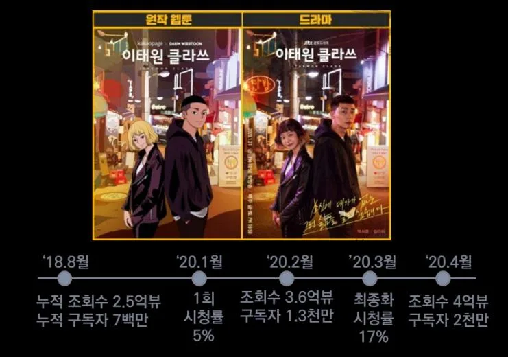
세번째 추진력은 웹툰을 원천으로 하는 IP 비즈니스 강화이다. 웹툰 기반 2차 저작물 제작 활성화는 사실 웹툰 플랫폼이 선제적으로 만들어낸 인위적 추진력은 아니다. 웹툰 플랫폼에 양질의 작품이 누적되면서 자연스럽게 드라마, 영화, 게임 제작사 사이에서 흥행이 검증된 웹툰을 원작으로 하는 2차 저작물을 제작하려는 시도가 일어났다. 웹툰
플랫폼은 이러한 웹툰 IP 비즈니스의 가치를 알아보고 직접 IP 사업에 뛰어들면서 세번째 추진력으로 활용했다. 작가는 자신의 작품에 대한 2차 저작물 창작을 허락하는 대가로 추가 노동 없이도 저작권료라는 신규 수입(+α)을 얻을 수 있다.
과거 웹툰의 영상화 계약이 편당 1억원 미만의 일회성 거래였던 것에 반해 최근 웹툰 IP가 영화, 드라마의 원천으로써 각광받으며, 2차 저작물 창작 계약 조건도 웹툰 IP 보유자 측에 유리하게 변하고 있다. 미래에셋증권의 조사에 따르면 2019년 이후에는 계약금 뿐만 아니라 흥행에 따른 Running Guarantee 계약을 함께 하기도 하며, 투자사 측에서도 제작비의 일부(5~10%)를 IP 확보금액으로 배정하는 등 작가의 저작권료 수입이 향상될 수 있는 조건이 강화되고 있다.41 영화, 드라마, 게임 등 2차 저작물의 성공은 시청자가 원천 IP인 웹툰에 관심을 이끌어내며 이를 통해 웹툰 플랫폼으로 그들을 끌어온다. [그림 10]은 인기 웹툰 ‘이태원 클라쓰’의 시기별 누적 조회수 및 누적 구독자수를 살펴본 자료이다. 이태원 클라쓰는 2018년 8월 누적 조회수 2.5억뷰, 누적 구독자 7백만명을 기록하며 웹툰 연재가 종료되었다. 이후 2020년 1월 드라마로 제작된 이태원 클라쓰는 2020년 3월 최종화 17%의 시청률을 기록하는 등 인기리에 방영되었는데, 드라마 종영 후인 2020년 4월 웹툰 이태원 클라쓰의 누적 조회수와 구독자는 4억뷰, 2천만명으로 드라마 방영 이전 대비 2배로 늘어나 있었다. 이는 조회수에 비례해 증가하는 유료 결제와 광고 R/S 수익을 늘려 한번 웹툰 작가의 수익을 증가시키는 효과를 가져온다. 드라마를 통해 유입된 독자로 인한 발생한 작가의 수익을 앞선 유료 수익화의 가정
하에서 시뮬레이션한 결과 약 13억원 정도의 수익이 발생하는 것으로 계산된다. ※ 이태원 클라쓰 드라마화 이후 추가 발생한 작가 수입 추정 ㆍ가정 : 대여료 200원(70%분배), 유료결제율 5%, CPM 3,500원(50%분배) ㆍ광고 R/S : 1.5억뷰 X CPM 3,500원 X 분배율 50% = 2.6억원 ㆍ유료 결제 R/S : 1.5억뷰 X 유료결제율 5% X 대여료 200원 * 분배율 70% = 10.5억원 웹툰 플랫폼의 해외 진출 또한 IP 비즈니스의 특성을 가지고 있다. 북미나 유럽권에서는 현지 작품들이 선호되기 때문에 웹툰 플랫폼들이 해당 지역의 작가와 작품 발굴을 위해 노력 중이다. 하지만 한국문화에 익숙한 아시아 지역에서는 우리나라 웹툰의 인기가 높으며, 국내에서 흥행이 검증된 인기 웹툰을 해당 지역의 언어로 번역해 서비스를 하고 있다. 이 과정에서도 작가는 새로운 노동력 투입없이 기존 작품의 서비스 지역 확장을 통해 추가적인 수입(+α)을 얻게 된다.42 웹툰 작가의 2차 저작 계약 내용이나 수익에 대해 공개된 정보를 찾는 것은 쉽지 않다. 일반적으로 최상위권에 속하는 소수의 인기 웹툰만이 2차 저작 계약으로 이어진다고 볼 때 2차 저작 수익이 포함되었을 것으로 예상되는 소득 상위 작가들의 수입과 그렇지 않은 작가들의 수익을 비교함으로써 2차 저작물로 인해 발생하는 수익 규모를 가늠해볼 수 있다. 2019년 네이버 웹툰 플랫폼에서 작품을 연재하는 작가 중 상위 20인의 평균 수익(2차 저작물 관련 수익 포함)은 17.5억원이다. 연소득 하위 64%에 해당하는 1억원과 비교시 17.5배 차이다. 또한 앞서 살펴본 이태원 클라쓰의 경우 국내 드라마 성공 이후 누적 매출이 300% 이상 증가했다고 알려졌는데43 이를 통해서도 2차 저작물의 성공이 원작 작가의 수입 향상에 얼마나 영향을 미치는지 짐작해볼 수 있다. 참고로 2021년 네이버웹툰이 공개한 1위 작가의 연수입은 124억원(네이버웹툰 플랫폼을 통해 발생한 수입에 限)에 달한다. 이로써 웹툰 작가의 수입은 인기 연예인이나 스포츠 스타에 맞먹는 수준까지도 기대할 수 있는 구조가 마련되었다.
웹툰 플랫폼이 사업에 추진력을 걸수록 사업 자체의 확장 뿐만 아니라 웹툰 작가의 수익 구조도 점차 견고해지며 기대 수입이 높아졌다. 초기 고료제가 작가들이 기본 생계를 유지할 수 있는 환경을 만들었다면, 웹툰의 수익화 과정에서 등장한 Revenue Sharing은 자신의 능력에 따라 더 많은 보상을 받을 수 있게 했으며, 마지막으로 웹툰 플랫폼의 IP 비즈니스와 해외사업 추진은 새로운 노동력 투입 없이 기존 작품을 통해 추가적인 수입을 얻을 수 있게 되었다. 그 결과 네이버웹툰에서 공개한 2020년 자사 플랫폼 최고 수익 작가의 연간 수익은 124억원에 달했다.
[표 7] 단계별 추진력과 작가 수입 구조 정리
(출처: 본인 작성)
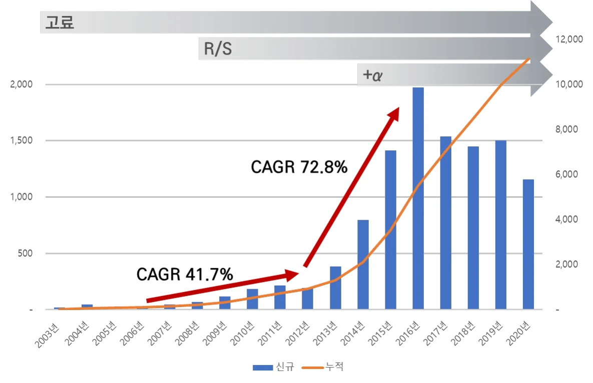
(4) Flywheel 작동 검증 1 : 작가와 작품수의 증가 지금까지 웹툰 플랫폼이 단계별로 도입한 비즈니스 모델 혁신이 부가적으로 작가 수입 향상에 어떻게 기여했는지를 살펴보았다. 이제 작가 수입 증가가 Flywheel을 통해 작가와 작품수 증가에 영향을 미쳤는지 데이터를 통해 검증해본다.
[차트 7] 2003년~2020년 웹툰 신규&누적 생산량
(출처 : 본인작성(상단 차트), 만화산업분류체계 개편 및 조사 연구 자료(하단 표))
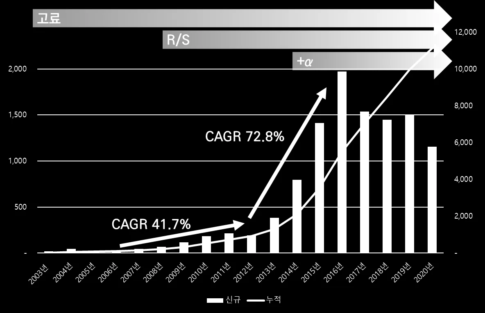
[차트 7]은 2003년~2020년 국내 신규 및 누적 웹툰 생산량을 보여준다. 본격적
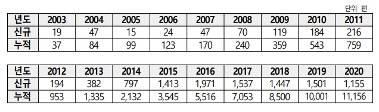
[차트 7]은 2003년~2020년 국내 신규 및 누적 웹툰 생산량을 보여준다. 본격적 논의에 앞서 포털사 웹툰 플랫폼 특히 네이버를 중심으로 살펴본 작가 수입과 국내 웹툰 시장 전체 작품수의 관계를 살펴보는 것이 적절한지에 대해 잠시 설명하고자 한다.44 2014년까지 네이버 도전 만화에 14만명이 작품을 올렸다는 사실에서 보듯 이 시기 예비 작가 수는 이미 네이버가 소화할 수 없을 정도로 증가해 있었다. 이러한 상황에서 새롭게 등장한 웹툰 전문 플랫폼들은 네이버와 카카오의 도전 만화에 연재하던 아마추어를 발탁해 등단시켰다. 또한 박세리/박찬호/김연아 키즈에서 보듯 특정 분야에서 크게 성공한 사람을 보고 많은 사람들이 그 분야에 뛰어드는 현상이 발생한다. 네이버를 통해 억대 연봉을 받는 웹툰 작가들이 알려지면서 웹툰 작가를 꿈꾸는 도전자들이 늘어나고 이는 웹툰 시장 전체에 공급을 늘린다. 따라서 시장 전체의 웹툰 작가와 작품수가 1등 웹툰 플랫폼 네이버의 활동의 영향을 받고 있다고 볼 수 있다.
2003년~2006년까지 신규 제작된 웹툰은 연간 50편 이하에서 등락을 거듭했다. (연평균 약 26편) 그러나 네이버가 도전 만화 제도를 본격화 한 2006년 이후에는 신규 웹툰수가 꾸준히 증가하는 모습을 보인다. 2006년부터 2012년까지 신규 웹툰수의 연평균 증가율은 41.7%에 달한다.
2013년 이후 증가 추세는 더욱 가파르다. 2013년 유료 결제 R/S와 광고 R/S가 본격 도입되었을 뿐만 아니라 2014년부터는 웹툰을 원작으로 하는 영화와 드라마도 꾸준히 흥행작을 내기 시작했다. 45 2013년 신규 작품수는 382개로 2012년 194개 대비 2배 증가했다. 이후 2016년까지 신규 웹툰의 수가 가파르게 증가함을 확인할 수 있는데 이 시기 연평균 성장률은 72.8%이다.
다만 2017년 신규 작품 및 작가수가 크게 감소한 후 2015년과 비슷한 수준으로 유지되는 추세를 보이는데 이러한 감소에는 2016년 10월부터 국내 웹툰 9만여 편을 불법 게재한 ‘밤토끼’의46영향으로 볼 수 있다. 밤토끼 등 불법 웹툰 사이트를 통해 유료 웹툰이 무료로 유통되면서 이 시기 합법 웹툰 플랫폼의 독자 트래픽과 유료 결제가 눈에 띄게 감소했다. [차트 8]은 밤토끼가 운영되던 당시 네이버, 다음(現 카카오) 웹툰의 트래픽 변화로 밤토끼의 트래픽이 145% 증가하는 동안 네이버와 카카오의 각각 43%, 81% 감소했을 뿐만 아니라 밤토끼의 PV가 국내 1위 웹툰 플랫폼 네이버의 PV를 넘어서기도 했다.
이는 작가들의 수입에도 영향을 미쳤다. 밤토끼를 통해 작품이 유통된 한 작가는 연재 초 1,400만원 수준이었던 월 매출이 2017년 말 250만원으로 줄어들었다고 밝혔다. 47 이 시기 발생한 신규 작품과 작가의 감소를 통해 수입의 감소가 웹툰 작가의 창작 의욕 및 웹툰 시장에 신규 진입하려는 지원자를 감소시키는데 영향을 미친다는 점을 추정할 수 있다. 역으로 이러한 현상은 작가의 수입을 보장하는 것이 작가와 양질의 작품을 다수 확보하는데 중요하다는 점을 증명한다.
[차트 9] 2011년~2020년 신규&누적 웹툰 작가수
(출처 : 웹툰가이드 WAS)
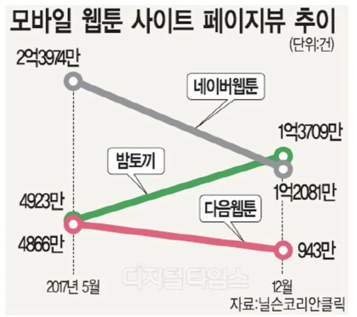
[차트 9]는 2011년부터 2020년까지 신규 웹툰 작가수를 보여주는 그래프이다.
(출처 : 미래에셋증권, 2021)
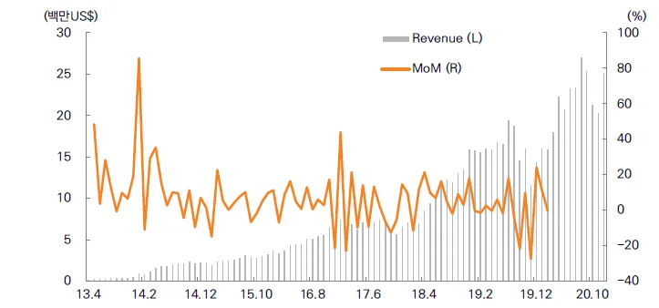
[차트 12] 카카오웹툰 연도별 국내(左) 및 해외(픽코마, 右) 거래액
(출처 : 유안타증권, 이베스트투자증권, 2021, 카카오 IR 자료, 2020)
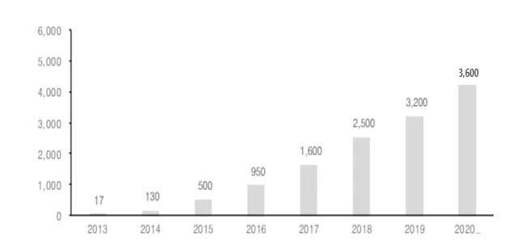
[차트 9]는 2011년부터 2020년까지 신규 웹툰 작가수를 보여주는 그래프이다. 신규 작가수는 [차트 7]의 신규 웹툰수와 유사한 추이를 보인다. 유료 결제 R/S와 광고 R/S가 시작된 2013년부터 신규 작가수가 빠르게 증가하며, 2017년 밤토끼 사태를 기점으로 감소했다가 다시 증가하고 있다.48 2010년 이전 도전 만화 시기 데이터는 구할 수 없어 작가수의 증가를 정확히 파악할 수 없지만, 많은 경우 작가들이 동시에 여러 편의 작품을 연재하지 않기 때문에 [차트 7]의 작품수 증가에 비례하는 추세로 작가수도 늘어났을 것으로 짐작할 수 있다.49 정리하면 웹툰 작가 및 작품의 수는 웹툰 작가의 기대 수입이 상승할 수 있는 구조가 더해질 때 마다 변곡점을 그리며 함께 증가하고 있다. 이는 웹툰 비즈니스의 기본 구조를 보여주는 Flywheel 상의 ‘작가 수입↑ → 작가↑ → 다양한 & 양질 작품↑’을 잘 설명한다.
한편 개별 플랫폼의 관점에서 IP 비즈니스와 해외사업은 인기 작가와 양질의 작품을 자사의 플랫폼으로 끌어오는 유인책이 되기도 한다. 웹툰 플랫폼 간 좋은 작품을 확보하려는 경쟁이 심화되면서 인기 작가나 가능성 있는 작품의 경우 계약 협상 단계에서 보다 유리한 IP 비즈니스 안을 제시하는 플랫폼을 골라서 계약을 하는 현상도 나타나고 있다.50 이런 측면에서 웹툰 플랫폼이 IP 비즈니스 역량을 확보하고 작가들의 기대 수입을 증대시키는 것은 양질의 작품을 늘리는데 중요한 역할을 한다. (5) Flywheel 작동51검증 2 : 독자와 플랫폼 수입의 증가 이러한 결과 독자수도 꾸준히 증가했다. [차트 10]은 네이버웹툰년 14배 증가해 월간 전세계 7,200만명이 네이버웹툰을 이용하고 있다. 이러한 작품과 독자의 증가는 교차 네트워크 효과를 증가시키며, 플랫폼에서 참가자 간 거래도 증가시켰다. [차트 11]은 네이버웹툰의 국내 거래액 추정치다. 정확한 금액은 차이가 있을 수 있으나 추세의 관점에서 2013년부터 국내 거래액은 꾸준히 증가했으며, 2020년에는 글로벌 전체 거래액 8,200억원을 기록했다.
카카오는 공식적으로 웹툰 이용자수를 공개하고 있지는 않다. 하지만 [차트 12]에서 보듯 국내외 웹툰 사업 거래액은 꾸준하게 증가하고 있다. 국내 거래액은 2020년 3,558억원, 일본 거래액은 4,136억원으로 카카오웹툰의 전세계 거래액은 7,694억원이다.
2020년 기준 네이버의 웹툰 매출은 3,609억원으로 전체 매출 5조 3,041억원의 6.8%를 차지한다. 카카오 역시 2020년 웹툰에서 매출 5,280억원을 기록했으며 이는 전체 매출 4조 1,567억원의 12.7%를 차지한다. 이제 웹툰은 네이버와 카카오 양사의 핵심 비즈니스로 자리잡았다고 말할 수 있다.
[차트 13] 네이버웹툰과 카카오웹툰 매출 추이
(출처 : 양사 전자공시 및 IR 자료, Business Watch50)
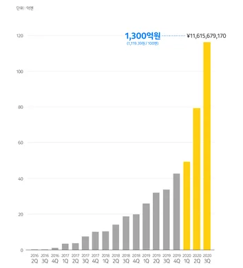
[차트 14] 2020년 네이버웹툰과 카카오웹툰의 전체 매출 중 웹툰 사업 매출 비중
(출처 : 본인 작성)
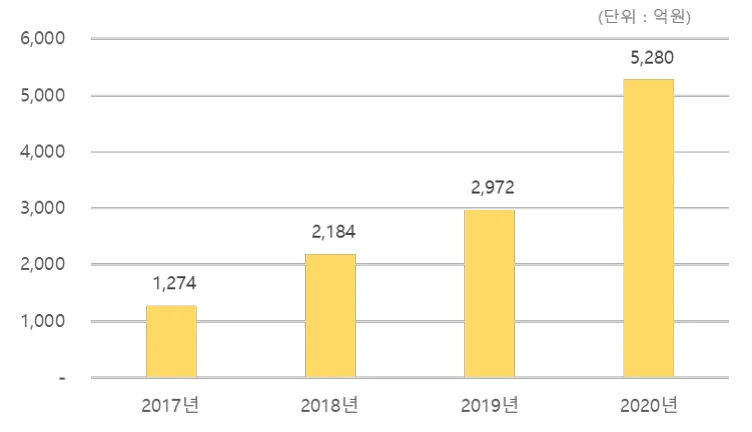
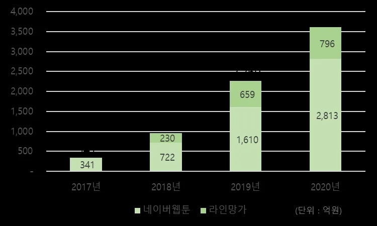
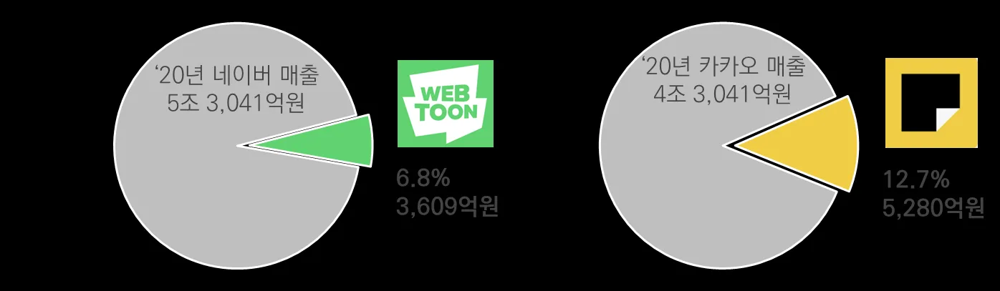
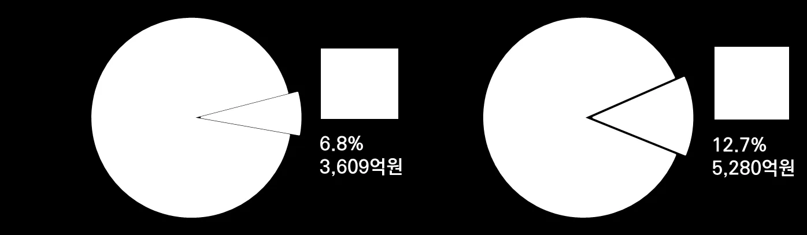
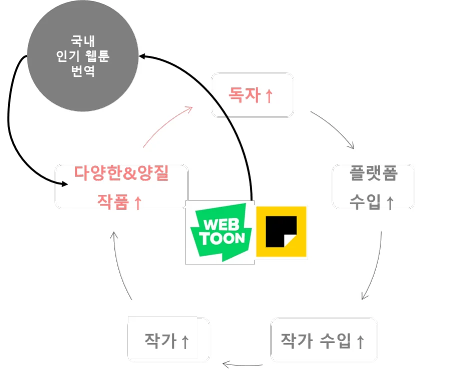

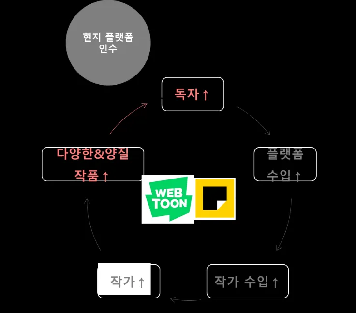
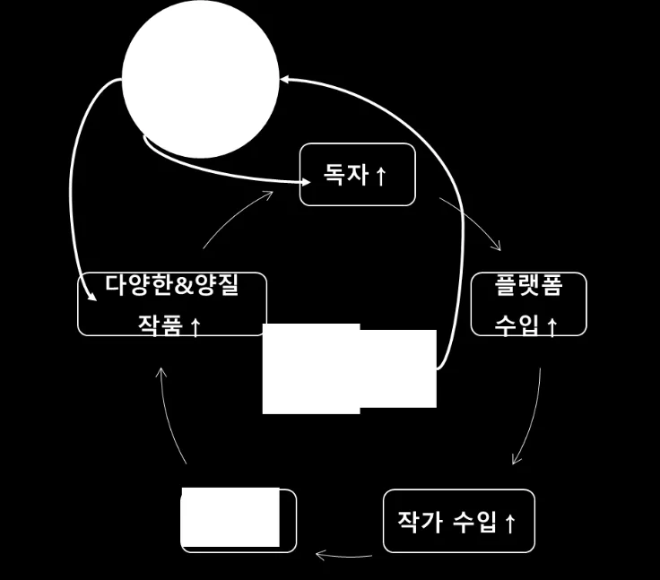
네이버, 카카오에서 웹툰 사업이 갖는 의미는 매출이라는 정량적 가치에 그치지 않는다. 웹툰은 차별화된 콘텐츠, UX, 비즈니스 구조로 글로벌 콘텐츠 시장에서도 경쟁력을 보이고 있다. 웹툰 사업의 글로벌 진출은 플랫폼을 기반으로 택시, 쇼핑 등 다양한 영역으로 사업에 진출하며 국내용이자 골목 상권 및 영세업체 죽이기라는 비난을 받던 포털사들에게 돌파구가 되며, 매출 이상의 정성적 가치를 더해 준다.
제 5장 글로벌 사업 전략
1. 이론적 배경: First Mover’s Advantage
Suarez와 Lanzolla(2005)에 따르면 선발 주자는 세 가지 측면에서 후발 주자 대비 경쟁력(First Mover’s Advantage)을 확보한다. 첫째 먼저 시작함으로써 선발주자는 후발주자 대비 해당 사업에 대한 지식과 노하우를 더 많이 축적할 수 있다. 둘째, 선발주자는 사업에 필요한 희소자산에 먼저 접근해 확보할 수 있다. 셋째, 고객이 후발주자의 상품, 서비스로 전환하기 어려운 구조를 만들어 견고한 고객 기반을 구축할 수 있다.
교차 네트워크 효과는 시장 선점에 의해 강화될 수 있다. 특히 세 가지 선점 효과 중 견고한 초기 고객 기반 구축은 교차 네트워크 효과가 있는 플랫폼에서 상호 의존성이 있는 다른 참가자를 이끌며 상호 강화되기 때문에 초기 시장을 선점한 플랫폼이 일정 기간 동안 후발주자 대비 큰 경쟁력을 가질 수 있게 된다.
2. 사업 전략
네이버와 카카오는 국내에서 성공한 웹툰 비즈니스 모델을 기반으로 글로벌 시장에 빠르게 진출해 웹툰이라는 새로운 시장을 스스로 창출하고 선점해 나가고 있다. 이 과정에서 세 가지 주요 전략(신속한 글로벌 진출, 기존 성공 요소 활용, 글로벌용 신규 Flywheel 추진력)을 집어볼 수 있는데 각 전략은 선점 효과와 교차 네트워크 효과를 강화하도록 설계되어 있다. 선점 효과와 교차 네트워크 효과는 양사 플랫폼의 힘을 강화시키며 초기 글로벌 웹툰 시장에서 선두주자 위치를 형성하고 있다.
첫번째 전략은 신속한 글로벌 진출이다. 네이버는 2014년부터 본격적으로 글로벌 사업을 시작했다. 웹툰 사업의 발전 단계상 2014년은 수익 사업화 시기이다. 수익 사업화 단계는 2013년부터 시작되는데 부분 유료화 모델 개발로 현재의 웹툰 플랫폼 비즈니스 모델이 정립된 시점이다. 네이버는 웹툰 플랫폼 사업이 돈이 된다는 걸 확인한 순간 지체 없이 해외시장에 진출했다. 이때까지 해외 시장에는 웹툰이라는 콘텐츠가 존재하지 않았다. 즉, 과거의 국내 만화 시장처럼 모바일 만화에 대한 Unmet Needs가 있었다. 네이버는 국내 웹툰 사업을 시작할 때처럼 이 틈을 공략했다. 이러한 신속한 해외 시장 진출 판단은 강력한 글로벌 플랫폼에게 시장에 진입할 틈을 주지 않고 네이버가 시장을 선점할 수 있었다.
두번째 전략은 기존 성공 요소를 적극적으로 활용한 점이다. 도전 만화와 부분유료화 모델은 플랫폼 비즈니스 Flywheel의 추진력으로 작용해 국내 웹툰 사업 성공의 핵심이 되었다. 네이버와 카카오는 웹툰 장르에 최적화되어 있는 플랫폼과 함께 도전 만화, 부분 유료화 모델을 해외에서도 이용하고 있다. 현지의 문화에 잘 맞는 웹툰 확보 및 웹툰 수급 생태계를 만들기 위해 만들어진 CANVAS(해외 도전만화 게시판)에는 매일 1천개 수준의 에피소드가 업로드 되고 있으며, 작품 수도 연평균 108%씩 증가해 2020년 기준 전세계에서 58만여명의 아마추어 창작자와 1,600여명의 전문 창작자가 활동하고 있다.52 또한 영어 작품 뿐만 아니
라 기타 언어 작품도 증가하고 있는데, 프랑스어 작품은 1만개, 스페인어 창작자 수도 1만명을 넘어서고 있다.53 CANVAS를 통해 발굴된 작가들의 성공도 확인할 수 있다. Leeanne M. Krecic는 2017년까지 IT회사에서 근무하고 있었지만, CANVAS를 통해 웹툰 작가로 데뷔해 2021년 12월 현재 구독자 440만명, 누적 작품(Let’s Play)뷰 수 5억 5천을 기록하는 스타 작가가 되었다. 누적 9억 5천뷰의 웹툰 Lore Olympus의 작가 Rachel Smythe도 CANVAS를 통해 작품을 알릴 수 있었다. Smythe는 지속적으로 작품활동을 하고 있었지만 독자들에게 전달할 방법이 없었다. 하지만 CANVAS를 통해 작품을 공개하고 정기적으로 연재하게 되면서 지금은 550만명의 구독자를 보유한 인기 작가로 거듭났다.
2016년 픽코마를 통해 일본 시장에 진출한 카카오웹툰은 2018년 네이버의 라인웹툰을 제치고 1위에 올랐다. 후발주자임에도 픽코마가 라인웹툰을 따라잡을 수 있었던 이유로 부분 유료화 모델인 ‘기다리면 무료’의 도입이 꼽힌다. 네이버는 2013년 일본 시장에서 라인망가 서비스를 시작했지만 초기 서비스는 일본 디지털 만화의 주류였던 단행본 형태의 종이만화를 디지털화한 전자책이 다수였다. 이에 반해 픽코마는 국내에서 성공한 웹툰 모델을 그대로 이식했다. 기다리면 무료의 적용을 위해 편당 길이를 짧게 나누고 모바일로 쉽게 볼 수 있도록 했다. 이후 네이버도 일본 서비스의 형태를 픽코마와 유사하게 바꾸고 있으며, 이를 통해 양사는 일본 웹툰 시장에서 1위, 2위 지위를 굳건히 하고 있다.
마지막으로 글로벌 사업을 위해 새롭게 도입한 추진력들이 있다. 이는 글로벌 사업의 특수성에 따라 Flywheel을 가속하는 역할을 한다. 앞서 살펴본 닭과 달걀의 문제를 다시 살펴보면 웹툰 플랫폼 비즈니스에서는 우수한 작품을 확보하는 것이 독자 확보보다 우선시된다. 하지만 작품만 확보하면 포털 이용자를 활용해 독자를 쉽게 모을 수 있었던 국내사업 구조에 비해 사업 기반이 약한 글로벌 시장에서는 독자를 효과적으로 끌어들이는 것도 중요한 문제이다. 따라서 글로벌 사업에 특화된 새로운 추진력들은 작품 증대와 독자 증대 모두를 겨냥하고 있다.
첫번째 추진력은 국내 인기 웹툰의 현지어 번역이다. 국내 인기 웹툰의 현지어 번역을 통해 시장 진입 초기부터 다양한 종류의 양질의 작품을 제공할 수 있다. 이는 특히 한국 문화에 대한 선호가 높은 아시아 지역에서 효과가 크다. 앞서 소개한 [표 1] 해외 네이버웹툰 인기 국내 작품을 보면 영어, 스페인어, 프랑스어 서비스에서 1개의 국내 작품만이 인기 순위 5위 내에 진입해 있는 것에 반해 대만어, 중국어, 태국어 서비스에서는 2~4개의 국내 작품을 찾아볼 수 있다. 이 표를 다른 측면에서 해석하면 전세계인의 공감대를 얻을 수 있는 소재를 다룬 국내 웹툰은 아시아를 넘어 전세계적으로도 인기를 얻을 수 있다고 볼 수 있다. 외모 콤플렉스를 다루고 있는 국내 웹툰 여신강림은 대부분의 언어 서비스에서 최상위권을 달리며 이를 반증하고 있다.
두번째 추진력은 현지 플랫폼 인수다. 이미 고객과 작품이 축적되어 있는 현지 플랫폼을 인수해 빠르게 이용자수를 늘리고 현지 정서에 맞는 작품을 빠르게 확보함으로써 Flywheel을 가속시킬 뿐만 아니라 시장에서 조기에 경쟁자를 제거함으로써 선도 사업자의 입지를 강화할 수 있다. 이 추진력은 [표 8]에서 볼 수 있듯 독자와 작품 모두 빠르게
끌어 모아야 하는 북미 지역에서 주로 사용되고 있다.
[표 8] 네이버웹툰과 카카오웹툰의 주요 해외 플랫폼 인수 내역
(출처 : 네이버, 카카오 보도자료)
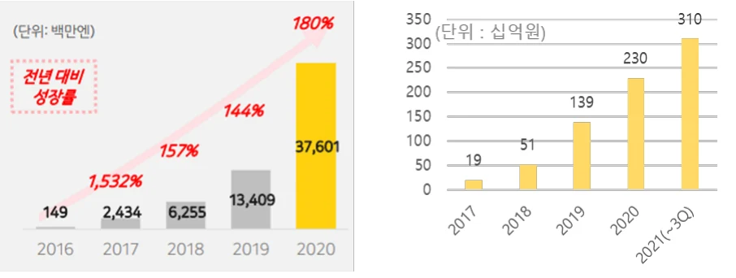
[차트 15] 네이버웹툰의 일본, 미국 분기 결제액 추이(左 일본, 右 미국)
(출처 : App Annie55)
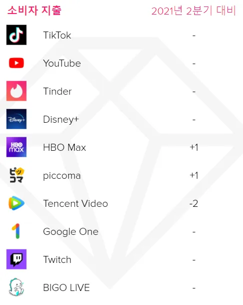
[차트 16] 카카오픽코마 연도별 결제액(左)과 연도별 매출(右)
(출처 : 본인 작성)
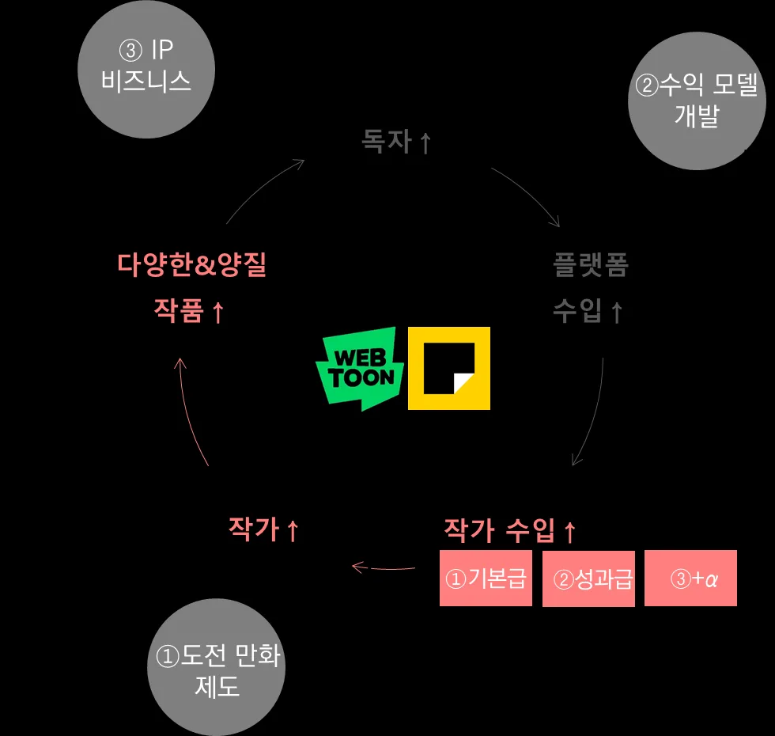
3. 성과
현재 10개 언어(한국어, 영어, 중국 본토, 중국 기타, 태국어, 인도네시아어, 스페인어, 프랑스어, 일본어, 독일어)로 서비스를 제공 중인 네이버웹툰은 2019년부터 지금까지 전세계 100여개국에서 모바일 만화 앱 부문 1위를 지켜오고 있다. 2021년 3분기에는 처음으로 글로벌 월평균 거래액 1천억을 돌파했다. [차트 15]는 네이버웹툰의 일본, 미국 분기 결제액을 보여준다. 21.3Q를 기준으로 YoY 33%, 35%을 기록하며 꾸준히 결제액이 증가하는 모습을 확인할 수 있다. 동기간 북미 웹툰 MAU 역시 역대 최대인 1,400만명을 넘어섰다.54 [차트 15] 네이버웹툰의 일본, 미국 분기 결제액 추이(左 일본, 右 미국)
네이버웹툰 플랫폼의 글로벌 영향력을 확인할 수 있는 정성적인 성과도 있다. 세계적인 엔터테인먼트기업인 마블과 DC에서 자사의 캐릭터를 활용한 오리지널 콘텐츠를 네이버웹툰을 통해 연재하기로 결정한 것이다. 마블은 블랙위도우와 샹치를 DC는 배트맨을 웹툰으로 만들었다. 마블과 DC 모두 자사의 전용 플랫폼이 있음에도 불구하고 네이버웹툰 플랫폼을 선택한 것 자체가 웹툰 및 디지털 만화에서 네이버웹툰의 힘을 반증한다고 볼 수 있다.
카카오웹툰은 일본 서비스인 픽코마의 성과가 눈에 띈다. 픽코마는 2021년 3분기 전세계 비게임 App 중 매출 6위를 기록했다. [그림 14]에서 보듯 픽코마는 틱톡, 유튜브, 틴더 디즈니+ 등 전세계적으로 유명한 서비스들과 어깨를 나란히 하고 있다. 10위 내에 진입한 유일한 국내 기업 서비스이기도 하다. 더욱 주목할 점은 이 조사에서 픽코마는 2021년 1분기 9위, 2분기 7위, 3분기 6위를 차지하며 순위를 점점 높여가고 있다는 점이다. [차트 16]의 픽코마 연도별 결제액, 연도별 매출 추이를 볼 때 향후 지속적인 순위 상승이 기대된다.55
제 6장 요약 및 연구 의의와 한계
1. 요약
본 연구는 플랫폼 비즈니스의 특징(다면 시장, 네트워크 효과, 닭과 달걀 문제)과 Flywheel Effect를 통해 포털의 웹툰 플랫폼의 성장 전략을 살펴보았다. 다면 플랫폼 비즈니스에서는 교차 네트워크 효과가 중요하며, 이것이 확보되면 플랫폼 비즈니스는 스스로 발전하게 된다. 웹툰 플랫폼은 기본적으로 독자, 작가, 광고주가 존재하는 다면 시장으로 포털에서 출발한 웹툰 플랫폼은 초기 비교적 쉽게 독자들을 모을 수 있었지만 이들을 만족시킬 좋은 작가와 양질의 작품은 충분치 못한 상황이었다. 플랫폼은 노동 집약적인 상품인 웹툰의 원활한 확보를 위해 ‘작가 수입 향상을 통해 좋은 작가가 지속적으로 공급되게 하여 양질의 작품을 확보’하는 Flywheel을 만들었다.(‘작가 수입↑ → 작가↑ → 다양한&양질 작품↑ → 독자↑ → 플랫폼 수입↑ → 작가 수입↑’으로 반복) 그리고 비즈니스의 성장 단계별로 도입한 비즈니스 모델 혁신(도전 만화 제도, 부분 유료화 수익 모델, IP 비즈니스)은 Flywheel을 가속시키며 사업을 성장시켰다. 이러한 활동은 웹툰 작가들의 수입도 향상(기본급+성과급+α)에도 기여했으며, 결과적으로 웹툰 작가는 기대 수입이 가장 높은 직업 중 하나가 되었다. 웹툰 작가의 경제적 수입 및 사회적 지위 상승에 따라 많은 사람들이 웹툰 작가가 되기 위해 도전하고 있으며 매년 천여 편이 넘는 신규 작품들이 매년 쏟아져 나오고 있다. 이러한 작품의 증가는 Flywheel 속에서 독자 Traffic 증가 및 플랫폼의 수입 증가로 이어졌고, 웹툰 사업은 쉼없이 돌아가는 Flywheel을 통해 자가 발전했다.
또한 네이버와 카카오는 국내에서 성공한 웹툰 비즈니스 모델을 기반으로 글로벌 시장에 신속하게 진출해 웹툰이라는 새로운 시장을 스스로 만들고 선점했다. 여기는 시장 선점 효과와 교차 네트워크 효과를 노린 세 가지의 전략이 있다. 첫째 부분 유료화 모델 개발로 현재의 웹툰 플랫폼 비즈니스 모델이 정립된 2014년 웹툰 비즈니스는 지체 없이 신속하게 해외 시장에 진출해 강력한 글로벌 플랫폼이 시장에 진입할 틈을 주지 않고 시장을 선점할 수 있었다. 두번째는 기존 성공 요소(도전만화, 부분 유료화 모델)의 적극적 활용이다. 도전만화는 현지의 문화를 반영한 작품 발굴과 플랫폼에 현지 작가 생태계를 끌어들이는데 기여하고 이다. 세번째는 글로벌 사업을 위한 새로운 추진력으로 국내 인기 웹툰의 현지어 번역을 통해 시장 진입 초기부터 좋은 작품을 지속적으로 제공 가능하게 했으며, 현지 플랫폼 인수를 통해 이용자수를 늘리고 현지 정서에 맞는 작품을 빠르게 확보함으로써 Flywheel을 가속시킬 수 있다. 이를 통해 네이버는 전세계 100여개 국에서 모바일 만화 App 1위를 차지하고 있으며, 카카오는 전세계 비게임 모바일 App 분기 매출 6위를 기록하고 있다.
이를 통해 네이버와 카카오의 웹툰 사업 혁신 전략 및 국내 웹툰 플랫폼의 글로벌 사업 성공 가능성을 확인할 수 있었다.
2. 연구 의의 및 연구 한계
웹툰 사업은 국내용에 그치던 우리나라 플랫폼 비즈니스가 글로벌에서도 경쟁력을 가질 수 있다는 것을 보여주는 의미 있는 사례이다. 나아가 웹툰을 비롯한 국내 창의문화 산업은 개별 콘텐츠의 일회성 성공을 넘어 플랫폼을 기반으로 산업 생태계를 구축함으로써 세계 시장을 무대로 장기적인 성공을 이끌어낼 수 있는 구조를 만들어가고 있다. 웹툰 뿐만 아니라 전세계 가입자수 2억4천만명의 메타버스 플랫폼 제페토(NAVER Z Corp.), BTS의 소속사인 Hybe가 운영하는 플랫폼 위버스에도 전세계 200여개국 3,200만명이 가입해 이용함으로써 이러한 가능성을 보여주고 있다. 특히 콘텐츠와 영향력 있는 플랫폼이 결합되면서 웹툰 IP나 유명 스타가 메타버스 콘텐츠의 재료가 되거나, 유명 스타를 소재한 웹툰이 제작되는 등 상호 큰 시너지 효과도 기대된다. 창의문화산업에서의 세계적 플랫폼 보유는 지금까지 제조업이 키워온 우리나라의 경제 규모를 크게 성장시키고, 문화적 위상을 한단계 끌어올리는 새로운 원동력이 될 수 있을 것이다.
마지막으로 연구 한계이다. 본 연구는 웹툰 플랫폼 비즈니스의 Flywheel의 작동 모습을 현상적으로 설명함과 동시에 가능한 데이터를 활용해 증명하고자 노력했다. 최근 웹툰의 산업적 중요성이 커지며 웹툰과 관련된 데이터를 제공하려는 움직임이 늘어나고 있으나, 아직은 데이터가 많이 부족한 상황이다. 연도별 작가나 작품수에 대한 산업 전체의 시계열 데이터는 구할 수 있었으나, 각 플랫폼별 연도별 작가수나 작품수, 독자수(MAU, PV)나 매출, 작가 수입 등에 대한 데이터는 확보할 수 없었다. 또한 2016년 이전 과거 데이터도 구하기 어려웠다. 이는 사업 규모가 작던 과거에는 별도로 지표관리를 하지 않아 데이터가 존재하지 않거나 각 플랫폼의 사업성과 관련된 내용으로 기업비밀을 보호를 목적으로 공개를 꺼리기 때문으로 추정된다. 해당 데이터를 구할 수 있었다면 Flywheel의 효과성을 보다 면밀하게 살펴볼 수 있었을 것이다.
각주
- “2020년 초중등 진로교육 현황조사”, 교육부, 한국직업능력개발원, 2021.4.24 ↩
- 양 사 2020.4Q IR 발표 내용 (네이버 8,200억원, 카카오 5285억원) ↩
- “만화 강국 日 뒤흔든 카카오 '픽코마'…전세계 앱 매출 7위”, 최수진, 한국경제, 2021.7.22 ↩
- “지난해 대기업 직원과 임원 간 연봉 격차 더 벌어졌다”, CEO스코어, 2021.3.31 ↩
- “승리호 넷플릭스 공개 하루 만에 세계 1위”, 이혜인, 경항신문, 2021.2.8 5 ↩
- 네이버웹툰이 운영하는 App으로 웹툰 뿐만 아니라 웹소설, 전자책도 제공 ↩
- 카카오엔터테인먼트가 운영하는 App으로 웹툰과 웹소설이 주력이나 웹드라마, ebook 등도 제공 (출처 : App Annie, ※ 그림의 회색 음영은 게임 App을 표시) 6 ↩
- 카카오 웹툰 서비스의 시작은 2003년 포털 다음(Daum)에서부터 시작되었으며, 2014년 카카오와 다음이 합병되면서 카카오로 이어졌다. 본 연구에서는 편의상 다음 시절의 웹툰 서비스도 모두 카카오로 통칭한다. 12 ↩
- 미리보기 : 일정 시간 후 무료로 제공될 콘텐츠를 사전에 보는 대가로 비용을 지불 완결보기 : 웹툰이 연재되는 동안은 무료로 볼 수 있으나 연재 종료 후 감상시 비용을 지불 베스트 콜렉션 : 작품의 하일라이트 부분만 모아서 유료로 제공(소장 등을 위해 비용 지불) 외전/미공개 에피소드 : 본 작품은 무료로 제공하되, 작품의 B컷이나 캐릭터를 활용한 외전 등은 유료로 제공 13 ↩
- 주어진 하트의 개수만큼 무료로 게임을 할 수 있다. 하트는 일정 시간이 지나면 무료로 보충이 되나, 이를 기다리지 않고 즉시 게임을 하기 위해 돈을 내고 하트를 구매할 수도 있다. ↩
- “우리 하는 일이 궁금하다고요? 글쎄 '웹툰 감별사'라고나 할까”, 김연주, 매일경제, 2020.12.31 ↩
- 당시 네이버웹툰은 해외에서 라인웹툰이라는 이름으로 서비스되고 있었으나, 이해의 편의상 네이버웹툰으로 표기한다. 14 ↩
- “여신강림'에 꽂혔다…중화권 홀린 네이버웹툰”, 윤희은, 한국경제, 2020.1.1 ↩
- [표 1]의 보도 당시(2019.12월)에는 네이버웹툰 프랑스어, 스페인어 플랫폼에 현지 작품이 거의 없는 상태에서 1위를 차지한 것이나, 2021.9월 현재는 프랑스어 플렛폼에서 62만명의 구독자를 보유한 인기 최상위 작품이다. ↩
- 유사한 사례로 쇠퇴하던 미국 홈비디오 시장을 부활시킨 Netflix(OTT)가 있다 ↩
- “2020年コミック市場は紙＋電子で6126億円、前年比23.0％増と2年連続急成長で過去最大規模に ～ 出版科学研究所調べ”, 鷹野凌, HON.jp, 2021.2.26 ↩
- QY Research도 2020년 조사까지는 전세계 만화 시장 규모를 46억 달러 수준으로 낮게 평가했으나 2021년 조사부터는 조사 대상에 네이버웹툰 등 디지털 코믹스 업체를 포함시키며 시장 규모 및 미래 전망을 크게 향상시켰다. ↩
- 리디북스도 20위권 내로 추정되나 WAS에서 PV를 제공하지 않아 표에서 제외되었음 ↩
- 네이버웹툰에 따르면 도전 만화 도입 10년 간 약 14만명이 작품을 올렸으며, 해외 현지 콘텐19 ↩
- 원출처 : 매출액, MAU, 거래액은 각 사 IR/전자공시 자료(단, 카카오 거래액은 이베스트투자증권(2021), PV는 WAS 통계, 웹툰수는 Webtoon Insight 통계, 창작자 수는 매일경제(’21.5.26)) ↩
- “네이버 ‘왓패드 웹툰 스튜디오’ 설립...웹툰·웹소설 영상화에 1000억 투자”, 김인경, Bloter, 2021.6.24 22 ↩
- “웹툰·웹소설 '기다리면 공짜'…작가는 피눈물납니다”, 박준이, 머니투데이, 2020.2.1 23 ↩
- 다음에서도 2003년 웹툰 서비스 시작 초기부터 ‘나도 만화가’, ‘웹툰 리그’ 등의 이름으로 아마추어 작품을 발굴하는 게시판을 운영하고 있다. 다만 아마추어를 발굴하여 정식 작가로 데뷔를 시키는 체계에서 네이버가 보다 발전된 모습을 보였다. ↩
- “네이버 웹툰 10주년 특별 페이지 오픈!”, 네이버 공식 블로그, 2014.6.26 ↩
- “한국 웹툰 10년 /하루 1000만 독자 업고 ‘만화 한류’ 꿈꾼다”, 임지선, 한겨레, 2013.10.11 27 ↩
- “[보도자료] 2009년 최저생계비 4인기준 1,326,609원, 4.8%인상”, 보건복지부, 2008.8.19 ↩
- 이러한 고료 수준 때문인지 당시에는 주 2회 연재가 많았다. ↩
- “[보도자료] 2014년 최저생계비 163만원, 5.5% 인상”, 보건복지부, 2013.8.14 28 ↩
- 공개된 포털사 연재 작가 수입은 고료+유료결제R/S+광고R/S+2차저작물 로열티를 모두 포함하고 있어 유료결제R/S만의 산출하기 어렵다. ↩
- 카카오도 2012년 7월 PPS를 도입했으나, 독자 트래픽 차이로 인해 네이버 PPS 성과가 좋다. ↩
- 현재의 네이버 PPS는 네이버웹툰 플랫폼을 통해 발생하는 모든 수입(유료 결재 R/S, 광고 R/S, IP 로열티 등)을 포함하지만, 도입 초기인 2013년에는 주로 광고 R/S에 한정된 개념이었다. ↩
- “네이버 웹툰 수익모델 도입 한달…"매출액 5억9천만", 권혜진, 한국경제, 2013.6.4 ↩
- ‘택시’ 박태준, 웹툰 작가 데뷔 후 한 달 인센티브 얼마였나 보니…‘깜짝’, 동아닷컴, 2015.3.11 31 ↩
- 일부 작가의 경우 고료, 유료 결제 분배액, 광고 R/S 외 IP 수익이 포함되어 있음 ↩
- ‘네이버웹툰 서비스 밋업 발표 자료’, 2019.9.24 ↩
- “Company Report : 디앤씨미디어”, 박정엽, 미래에셋대우, 2020.6.2 ↩
- 해외 플랫폼에서 발생하는 R/S 수익도 조회수에 비례해 금액이 달라지는 성과급이나, 아직까지대부분의 작가가 최초 웹툰 작업시 해외 연재를 염두에 두고 있지는 않는다는 점에서 +α 성격의 수익으로 규정지었다. 처음부터 해외 연재를 고려한 작품이라면 성과급으로 분류해야 한다. ↩
- “2020 이 시대의 슈퍼 IP는 어떤 모습일까?”, 장성욱, 한국콘텐츠진흥원, 2021.1.15 34 ↩
- 일차적으로는 네이버, 카카오의 연도별 작품수 데이터를 구할 수가 없었다. 36 ↩
- 2014년 tvN 드라마 미생(시청률 9%), 2015년 영화 내부자들(관객수 915만), 2017년 영화 신과함께_죄와 벌(관객수 1,441만) ↩
- “불법사이트 기승… 흔들리는 웹툰산업”, 진현진, 디지털타임스, 2018.1.14 37 ↩
- “‘우울증, 자살충동…’ 밤토끼가 웹툰계에 남긴 그림자”, 이형두, 디지털데일리, 2018.8.30 ↩
- Flywheel의 구조상 작가수를 살펴보고 작품수를 살펴보는 것이 논리적이나, 2010년 이전 시기의 작가수 데이터를 구할 수 없었으며, 일반적으로 작가가 한 시점에 하나의 작품만을 창작한다는 점에서 착안해 작품수를 먼저 살펴보고, 2010년 이전의 작가수를 추정했다. ↩
- “IP 확장과 웹툰 작가의 몫”, 조익상, 한국만화영상진흥원, 2021.7.28 39 ↩
- “10년전 사양산업 만화, 웹툰으로 부활! 뜨거운 열정, 작가, 회사, 독자 공생을 찾다”, DBR, 2015.11 ↩
- “애니 ‘신의 탑’의 저력… 네이버웹툰, 북미 넘어 글로벌 1위 꿈꾼다”, 현화영, 세계일보, ↩
- “[네이버, 이젠 해외로]② ‘지옥’ 이어 ‘좀비·BTS’가 온다… 글로벌로 뻗는 웹툰”, 장우정, 조선비즈, 2021.12.14 44 ↩
- “[네이버 컨콜] “북미 웹툰 MAU 1400만 달성”, 김미희, 파이낸셜 뉴스, 2021.10.21 46 ↩
- “2021년 3분기, 상위 모바일 앱”, App Annie, https://www.appannie.com/en/go/q3-2021-index/ ↩
참고자료
ㅇ “플랫폼 비즈니스의 정의“, 마셜 밴 앨스타인, 상지트 폴 초더리, 제프리 파커, <플랫폼 레볼루션>, p.35~36, 부키, 2017 ㅇ “Multi-Sided Platforms”, Hagiu, Andrei and Julian Wright, Harvard Business School Working Paper, 2011 ㅇ “Bridging differing perspectives on technological platforms: Toward an integrative framework”, Annabelle Gawer, Research Policy, 2014 ㅇ “Strategies for Two-Sided Markets”, T. R. Eisenmann, P.Geoffrey, M. Van Alstyne, Harvard Business Review, 2006 ㅇ “The Flywheel Effect”, Jim Collins 공식 홈페이지, https://www.jimcollins.com/concepts/the-flywheel.html ㅇ “Customer-centricity”, Amazon jobs, https://www.amazon.jobs/en- gb/landing_pages/about-amazon ㅇ 2017~2020 네이버 연차보고서 및 전자공시, 네이버, 2017~2020 ㅇ 2017~2020 카카오 연차보고서 및 전자공시, 카카오, 2017~2020 ㅇ 2017~2020 웹툰 작가 실태조사, 한국콘텐츠진흥원, 2017~2020 ㅇ 2018~2020 웹툰 사업체 실태조사, 한국콘텐츠진흥원, 2018~2020 ㅇ 2006~2020 만화 산업 백서, 한국콘텐츠진흥원, 2006~2020 ㅇ 2013~2020 콘텐츠 산업 통계 조사, 한국콘텐츠진흥원, 2013~2020 ㅇ 2015 웹툰 산업현황 및 실태조사, 한국콘텐츠진흥원, 2015.6 ㅇ “2020 이 시대의 슈퍼 IP는 어떤 모습일까?”, 장성욱, <NContents, Vol. 18>, 한국콘텐츠진흥원, 2021.1.15 ㅇ “웹툰플랫폼 글로벌화 전략 연구”, 정보통신산업진흥원, 2017.11.30 51 ㅇ “K 스토리의 힘, 세계 만화시장에서의 한국 웹툰”, 장민지, <C-Story Vo.23>, p.4~p.7, 한국저작권보호원, 2020.7 ㅇ “[Company Analysis] Never, 3분기 실적 OK, 글로벌 진출 성공 가능성 부각”, 김창권, 미래에셋대우, 2021.10.8 ㅇ “[Industry Analysis] 웹툰과 드라마, 성장 레벨 2단계 격상”, 박정엽, 미래에셋 대우, 2021.1.18 ㅇ “[Industry Report] 웹툰, 글로벌 모바일 콘텐츠 차기 대세”, 박정엽, 미래에셋대 우, 2019.9.17 ㅇ “[2020 신성장산업 투자 포럼] 네이버웹툰 & 카카오페이지 : 모바일 시대의 웹툰은 새로운 대세 콘텐츠”, 박정엽, 미래에셋대우, 2019.11.11 ㅇ “웹툰 Next Korean Wave”, 이창영, 박성호, 백길현, 이혜인, 유안타증권 2021.1.5 ㅇ [Company Report] 카카오, 이창영, 유안타증권, 2021.1.5 ㅇ “Naver, 카카오 시가총액 격차 증발을 바라보며…”, 성종화, 이베스트투자증권, 2021.6.15 ㅇ “모바일 콘텐츠 분야의 차기 주자, 웹툰/웹소설, 영화, 오디오 서비스의 특성 및 이용패턴 분석”, Nielsen KoreanClick, 2018.10.30 ㅇ “The Half-Truth of First-Mover Advantage”, Fernando F. Suarez, Gianvito Lanzolla, Harvard Business Review, 2005.4 ㅇ “네이버웹툰은 왜 일본에서 카카오에 밀렸나”, 남혜현, Byline Network, https://byline.network/2020/11/9-73/, 2020.11.9